مشروع HELLO: تطور الأجسام الكبيرة والمضيئة عند مرتفع
الملخص
نقدّم مشروع تطور الأجسام الكبيرة والمضيئة عند مرتفع (HELLO)، وهو مجموعة من محاكاة كونية عالية الدقة تهدف إلى دراسة نظائر درب التبانة ( ) عند انزياح أحمر عالٍ (). واستناداً إلى مشروع الاستقصاء العددي لمئة جسم فيزيائي فلكي (NIHAO)، يتضمن HELLO مخططاً محدّثاً للإثراء الكيميائي وإضافة التغذية الراجعة المحلية الناتجة عن التأين الضوئي. وبصرف النظر عن الانزياح الأحمر والكتلة، تُظهر مجراتنا تقدماً سلساً على طول التسلسل الرئيسي لتشكّل النجوم حتى ؛ وحول هذه القيمة تبقى عينتنا عند غير مضطربة إلى حد كبير، في حين تبلغ أكثر المجرات كتلة عند ذروة معدل تشكّل النجوم (SFR) ثم يبدأ هذا المعدل بالانخفاض، نتيجة مزيج من استهلاك الغاز والتغذية الراجعة النجمية. ومع أن تغذية AGN الراجعة تبقى دون التغذية الراجعة النجمية في ترسيب الطاقة، فإن طبيعتها الموضعية تضيف على الأرجح إلى العمليات الفيزيائية التي تؤدي إلى تراجع معدلات SFR. وتتحدد المرحلة التي توجد فيها مجرة ضمن مجال كتلنا عند انزياح أحمر معين بخزانها الغازي وتاريخ تجمّعها. وأخيراً، تتفق مجراتنا اتفاقاً ممتازاً مع علاقات قياس متعددة رُصدت بواسطة تلسكوب هابل الفضائي وتلسكوب جيمس ويب الفضائي، ومن ثم يمكن استخدامها لتوفير إطار نظري لتفسير الرصدات الحالية والمستقبلية من هاتين المنشأتين، ولإلقاء الضوء على الانتقال من المجرات المشكّلة للنجوم إلى المجرات الخاملة.
keywords:
الكوازارات: الثقوب السوداء فائقة الكتلة، المجرات: التشكّل، المجرات: التطور، الطرائق: عددية، الطرائق: إحصائية1 المقدمة
إذ ندخل عصراً يتميز بنشر أدوات فلكية أكثر تقدماً قادرة على رصد المجرات الأقرب إلى فجر الكون، مثل تلسكوب جيمس ويب الفضائي (JWST; Gardner et al., 2006)، والتلسكوب بالغ الكبر (ELT; Neichel et al., 2018)، وتلسكوب الثلاثين متراً (TMT; Skidmore et al., 2015)، وغيرها، يصبح ترسيخ أساس نظري متين لتشكّل المجرات وتطورها عند الانزياح الأحمر العالي أمراً متزايد الأهمية. وتُعد المجرات المشكّلة للنجوم (SFGs) في العصور المبكرة أسلافاً لمجرات اليوم الإهليلجية والقرصية الضخمة، بما في ذلك مجرتنا درب التبانة (MW). وتوفر هذه المجرات المبكرة نافذة فريدة على الطبيعة المعقدة لهذه الأنظمة. ومن ثم فمن الضروري أن تعيد المحاكاة الكونية إنتاج الظواهر المرصودة بدقة، بما يعزز فهمنا لمسارات تطور المجرات.
تُظهر SFGs ذات مرتفع نشاطاً أعلى بكثير في تشكّل النجوم مقارنة بنظيراتها المحلية (Schiminovich et al., 2005; Le Floc’h et al., 2005)، إذ تبلغ معدلات تشكّل النجوم (SFRs) عشرات ومئات yr-1 (انظر مثلاً Gruppioni et al., 2013). إضافة إلى ذلك، تُظهر كل من SFGs المحلية ونظيراتها الأعلى ارتباطاً وثيقاً بين SFR والكتلة النجمية (علاقة SFR–)، مع ازدياد التطبيع في الأزمنة الكونية اللاحقة (Brinchmann et al., 2004; Noeske et al., 2007; Elbaz et al., 2007; Daddi et al., 2007). ويُشار إلى علاقة SFR– هذه أيضاً باسم التسلسل الرئيسي لتشكّل النجوم (SFMS)، وتُنمذج عادة بقانون قوة بحيث ، وبميل يقارب الواحد للمجرات منخفضة الكتلة ( ). ولا يزال وجود ميل أضحل فوق كتلة انعطاف موضع خلاف؛ إذ وجد، مثلاً، Whitaker et al. (2014) وLee et al. (2015) وSchreiber et al. (2015) وTomczak et al. (2016) وLeja et al. (2022) أن تشكّل النجوم يتباطأ عند الطرف عالي الكتلة، بينما وجد Speagle et al. (2014) وPearson et al. (2018) أن SFMS متسق مع قانون قوة واحد عند ثابت. ومع ذلك، فإن قيم SFR العالية المقاسة في العصور المبكرة لا بد أن تُكبح في النهاية لإنتاج مجرات محلية ذات كتل نجمية متوافقة مع الرصدات. ويمكن تحقيق ذلك إما بإزالة الغاز، أو تسخينه، أو إعاقة تبريده، أو منعه من الانهيار ابتداءً. ولا تزال الأصول الفيزيائية لعملية الإخماد محل نقاش، وقد اقتُرحت سيناريوهات مختلفة.
أولاً، يُعتقد أن النوى المجرية النشطة (AGNs) في مراكز المجرات الضخمة تؤدي دوراً حاسماً في إزالة الغاز وتثبيط عمليات التبريد عبر حقن الطاقة والزخم في محيطها، مما يفضي إلى إخماد تشكّل النجوم المرصود في المجرات الإهليلجية (McNamara and Nulsen, 2007; Hardcastle et al., 2013; Ellison et al., 2016; Leslie et al., 2016; Comerford et al., 2020)؛ غير أنظر، مثلاً، Juneau et al. (2013); Bernhard et al. (2016) وDahmer-Hahn et al. (2022) لادعاءات مخالفة. وفي الواقع، تتطلب معظم المحاكاة تغذية AGN راجعة لخفض تشكّل النجوم واستعادة عدد من المرصودات الأساسية للمجرات الضخمة (Valageas and Silk, 1999; Vogelsberger et al., 2014; Crain et al., 2015; Costa et al., 2018; Blank et al., 2019; Zinger et al., 2020). ثانياً، اقترح Martig et al. (2009) آلية «الإخماد المورفولوجي»، حيث يؤدي تراكم انتفاخ مركزي ذي بئر كمون عميقة بما يكفي إلى تثبيت القرص الغازي المحيط به، مما يحد بدوره من قدرة الغاز على الانهيار إلى كتل مرتبطة. وأخيراً، يشير نوع من «إخماد الهالة» إلى أن الغاز الساقط إلى هالات تفوق كتلتها يمكن أن يُمنع من التبريد بكفاءة عبر التسخين الصدمي (Birnboim and Dekel, 2003; Kereš et al., 2005; Dekel and Birnboim, 2006).
وخارج SFMS، يبدو أن مجموعة أخرى من علاقات القياس المدروسة جيداً كانت قائمة بالفعل في الأزمنة المبكرة. وجد van der Wel et al. (2014) أن نصف القطر الفعال () لكل من المجرات المبكرة النمط وSFGs يتدرج بقوة مع الكتلة النجمية عند جميع الانزياحات الحمراء . ومع ذلك تختلف علاقات الحجم–الكتلة بين المجموعتين، إذ تكون SFGs أكبر عند جميع الكتل وتُظهر ميلاً أكثر ثباتاً وأقل انحداراً نسبياً قدره عبر جميع الانزياحات الحمراء المفحوصة. ومع أن علاقة الحجم–الكتلة تنطبق على المجتمع بأكمله، فقد تكون المجرات الفردية تطورت فعلياً على مسارات أشد انحداراً، من لأسلاف أنظمة اليوم ذات كتلة MW (van Dokkum et al., 2013, 2015) وصولاً إلى لأكثر المجرات كتلة (Patel et al., 2013). وفوق ذلك، تصبح المجرات ذات الكتلة الثابتة أصغر مع ازدياد الانزياح الأحمر (Trujillo et al., 2007; Buitrago et al., 2008; van der Wel et al., 2012)، وهو اتجاه تأكد حديثاً برصدات JWST (Ormerod et al., 2024).
ثمة مقياس مهم آخر هو الكثافة السطحية النجمية، سواء قِيست داخل 1 kpc () أو داخل ()، ويُفترض أنها حاسمة في فك آليات وتوقيت انتقال SFGs إلى المجتمع الخامل، بما يوفر رؤى في مساراتها التطورية. وقد ثبت أن المتغيرين مترابطان بإحكام مع الكتلة النجمية ويمكنهما المساعدة في فهم آليات الإخماد في المجرات (Cheung et al., 2012; Fang et al., 2013; Barro et al., 2017). وبالفعل، تقترح دراسات عديدة أن الإخماد تسبقه زيادة كبيرة في الكثافة المركزية (Schiminovich et al., 2007; Bell, 2008; Lang et al., 2014; Whitaker et al., 2017). غير أن تراكم مثل هذا الانتفاخ مرتبط فحسب بعملية الإخماد وعلى الأرجح ليس مصدراً فيزيائياً سببياً. وتشير المحاكاة الكونية إلى أن المجرات ذات مرتفع تمر بمرحلة انضغاط رطب (Dekel and Burkert, 2014) تليها ذروة في تشكّل النجوم ثم إخماد من الداخل إلى الخارج بعد استنزاف الغاز المتاح (Zolotov et al., 2015; Ceverino et al., 2015; Tacchella et al., 2015, 2016; Lapiner et al., 2023).
في هذه الورقة، نقدّم مشروع تطور الأجسام الكبيرة والمضيئة عند مرتفع (HELLO)، المنبثق من الشيفرة الكونية الهيدروديناميكية نفسها لتشكّل المجرات كما في مشروع الاستقصاء العددي لمئة جسم فيزيائي فلكي (NIHAO; Wang et al., 2015). وبينما يتكون NIHAO من عينة إحصائية كبيرة من محاكاة التكبير عالية الدقة لمجرات محلية تغطي عدة رتب مقدار في الكتلة، يهدف HELLO إلى دراسة نظيراتها الضخمة () عند [2–4] بدقة تقارب ضعفي الدقة، ويتضمن 30 جسماً وقت كتابة هذه الدراسة. وقد نجحت محاكاة NIHAO نجاحاً لافتاً في إعادة إنتاج طيف من خصائص المجرات. وتشمل هذه الخصائص علاقة الكتلة النجمية إلى كتلة الهالة (SHMR) كما بيّن Wang et al. (2015)، والارتباط بين كتلة غاز القرص وحجم القرص (Macciò et al., 2016)، وعلاقة تَلي-فيشر بحسب Dutton et al. (2017).
كذلك مثّلت محاكاة NIHAO بدقة دالة كتل التوابع في MW وM31، كما يتضح في Buck et al. (2019). وأخيراً، درست أعمال واسعة آثار تغذية AGN الراجعة في المادة المظلمة والباريونية ضمن NIHAO (مثلاً Macciò et al., 2020; Blank et al., 2021; Waterval et al., 2022). نعرّف مجموعتنا الجديدة من مجرات HELLO بمقارنتها بعدد من علاقات القياس الرئيسة المرصودة عند مرتفع، ولا سيما SHMR وSFMS وعلاقة الحجم–الكتلة وعلاقة –. وأخيراً، نحاول تقديم تفسير للأسباب الكامنة وراء تراجع SFRs المرصود في بعض مجراتنا من خلال تحليل محتوى الغاز وتطوره وتوزيعه، وكذلك نمو الثقب الأسود المركزي (BH) وما يوافقه من تغذية راجعة طاقية منطلقة.
تُنظّم هذه الورقة كما يأتي: في §2 نحدد جوانب محاكاتنا، بما في ذلك شروطنا الابتدائية (§2.1)، وتشكّل النجوم والتغذية الراجعة النجمية (§2.2)، والكيمياء (§2.3)، والتغذية الراجعة المحلية بالتأين الضوئي (§2.4)، ونمو الثقوب السوداء وتغذيتها الراجعة (§2.5)؛ وفي §3 نفصل معدلات وتواريخ تشكّل النجوم للمجرات في محاكاتنا؛ ونعلّق على علاقات القياس المختلفة المرصودة في مجموعتنا من المجرات المحاكاة في §4، وتحديداً علاقة الكتلة النجمية إلى كتلة الهالة (§4.1)، والتسلسل الرئيسي لتشكّل النجوم (§4.2)، وعلاقة الحجم–الكتلة (§4.3)، وعلاقات قياس الكثافة السطحية (§4.4)؛ ثم في §5 نتناول توفر الغاز عبر مناقشة درجة حرارة الغاز وكثافته (§5.1)، ثم تغذية AGN الراجعة (§5.2) الموجودة في محاكاتنا؛ وأخيراً نقدم ملخصاً موجزاً وملاحظات ختامية في §6.
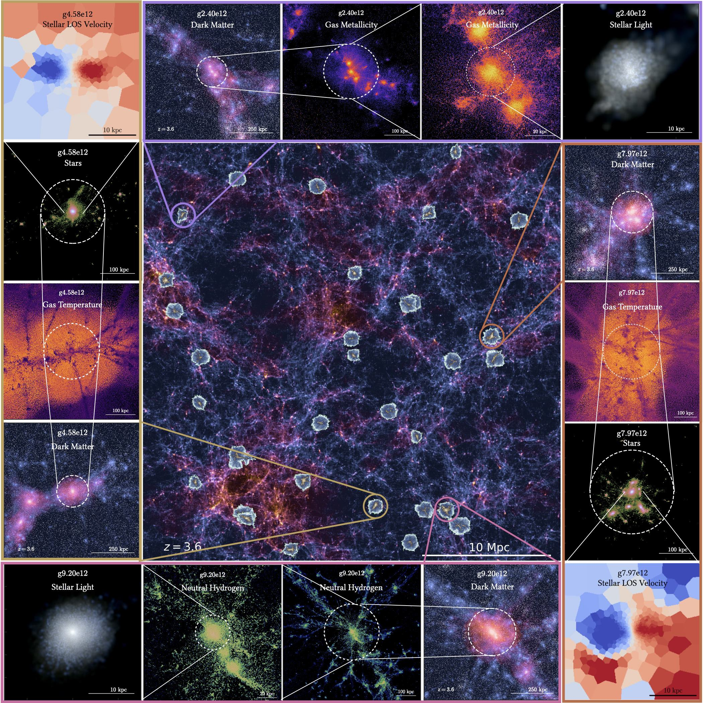
2 المحاكاة
HELLO هو مجموعة من محاكاة التكبير الكونية الهيدروديناميكية عند ، ويبني على NIHAO باستخدام الطرائق نفسها لتوليد الشروط الابتدائية وتشكّل النجوم والتغذية الراجعة النجمية ونمو الثقوب السوداء وتغذيتها الراجعة. وتتعلق التطبيقات الجديدة بتتبع العناصر الكيميائية وإدخال التغذية الراجعة المحلية بالتأين الضوئي (LPF). وللاستكمال، نلخص كل جزء في الأقسام الفرعية الآتية. النموذج الكوني المستخدم قائم على إطار CDM مسطح، مستنداً إلى معاملات Planck Collaboration et al. (2014)، ومستخدماً ثابت هابل () قدره 67.1 . وتُعطى الكثافات المرتبطة بالمادة والطاقة المظلمة والإشعاع والباريونات بالقيم {, , , } = {0.3175, 0.6824, 0.00008, 0.0490}. إضافة إلى ذلك، ضُبط تطبيع طيف القدرة عند = 0.8344 وميله عند = 0.9624.
يتكون مشروع HELLO حالياً من مجموعتين من 17 و15 مجرة تحتوي هالاتها على نحو جسيم داخل أنصاف أقطارها الفيريالية عند الانزياحين الأحمرين النهائيين 2.0 (العمر 3.3 Gyr) و3.6 (العمر 1.7 Gyr)، على التوالي (انظر الشكل 1 للحصول على عرض بصري لحجم المحاكاة). وسنسمّي هاتين المجموعتين في ما تبقى من هذا العمل ‘HELLOz2.0’ و‘HELLOz3.6.’ تُعرّف الهالات في HELLO باستخدام Amiga Halo Finder (AHF; Gill et al., 2004; Knollmann and Knebe, 2009). ويُعرّف نصف القطر الفيريالي بأنه نصف القطر الذي تحتوي داخله الهالة على كثافة وسطية مقدارها 200 ضعف الكثافة الحرجة عند الانزياح الأحمر ، ويُرمز إليه بـ .
ومن ثم تُعبّر الكتلة الكلية المحصورة داخل كرة نصف قطرها بالرمز ، وترتبط الكميتان بالعلاقة الآتية:
| (1) |
في بقية الورقة، نستخدم و على نحو متبادل. تمتد كتل الهالات النهائية للمحاكاة من (1 إلى . ومن ثم يهدف HELLO إلى دراسة مجرات ضخمة شبيهة بـ MW حول الظهيرة الكونية (Madau and Dickinson, 2014). ونؤكد أن مجراتنا ليست أسلافاً لمجرات اليوم الشبيهة بـ MW، بل يُحتمل أنها أسلاف لمجرات إهليلجية أضخم.
تتطور كل هالة هيدروديناميكياً باستخدام شيفرة GASOLINE2 (Wadsley et al., 2017)، في حين تُشغّل نظيرة تحتوي على المادة المظلمة فقط (DMO) باستخدام PKDGRAV2 (Stadel, 2001, 2013). وتبلغ دقة كتلة المادة المظلمة وكتلة الغاز في النسخ الهيدروديناميكية و على التوالي، مع أطوال تليين فيزيائية مناظرة قدرها (127) pc و (54) pc عند (3.6). وتُلخّص بعض الكميات الرئيسة في محاكاتنا في الجدول 1. وللحصول على قائمة شاملة لجميع معاملات المحاكاة عند انزياحاتها الحمراء النهائية، انظر الملحق A.
| Name | [ ] | [ ] | [ ] | [kpc] | ||
|---|---|---|---|---|---|---|
| g3.08e12 | 2.0 | 2.84 | 7.31 | 10.1 | 142 | 1,943,368 |
| g3.09e12 | 2.0 | 2.94 | 7.26 | 11.3 | 144 | 2,058,093 |
| g3.00e12 | 2.0 | 2.43 | 8.33 | 5.91 | 135 | 1,501,948 |
| g3.20e12 | 2.0 | 2.72 | 9.27 | 5.69 | 140 | 1,693,806 |
| g2.75e12 | 2.0 | 2.45 | 8.77 | 9.74 | 135 | 1,778,286 |
| g3.03e12 | 2.0 | 1.67 | 5.69 | 7.55 | 119 | 1,250,411 |
| g3.01e12 | 2.0 | 2.67 | 7.41 | 7.67 | 139 | 1,729,071 |
| g2.29e12 | 2.0 | 1.81 | 7.71 | 7.53 | 122 | 1,333,337 |
| g3.35e12 | 2.0 | 1.72 | 6.69 | 2.37 | 120 | 964,316 |
| g3.31e12 | 2.0 | 2.32 | 8.21 | 5.27 | 133 | 1,449,371 |
| g3.25e12 | 2.0 | 2.65 | 8.11 | 4.09 | 139 | 1,643,064 |
| g3.38e12 | 2.0 | 3.08 | 9.86 | 8.09 | 146 | 2,014,002 |
| g3.36e12 | 2.0 | 2.08 | 4.43 | 3.14 | 128 | 1,209,250 |
| g2.83e12 | 2.0 | 2.32 | 5.75 | 6.57 | 133 | 1,551,228 |
| g2.63e12 | 2.0 | 2.35 | 7.85 | 9.01 | 133 | 1,682,819 |
| g3.04e12 | 2.0 | 3.01 | 8.10 | 9.50 | 145 | 1,997,107 |
| g2.91e12 | 2.0 | 2.11 | 4.33 | 7.29 | 129 | 1,445,948 |
| g2.47e12 | 3.6 | 2.21 | 8.16 | 3.39 | 87 | 1,259,900 |
| g2.40e12 | 3.6 | 2.29 | 5.16 | 0.62 | 88 | 1,231,536 |
| g2.69e12 | 3.6 | 2.54 | 11.00 | 4.53 | 91 | 1,493,797 |
| g3.76e12 | 3.6 | 2.58 | 12.30 | 3.45 | 102 | 1,998,769 |
| g4.58e12 | 3.6 | 2.60 | 11.20 | 5.86 | 92 | 1,616,009 |
| g2.71e12 | 3.6 | 1.98 | 9.75 | 4.35 | 84 | 1,216,000 |
| g2.49e12 | 3.6 | 2.55 | 9.72 | 2.99 | 91 | 1,427,551 |
| g2.51e12 | 3.6 | 2.52 | 6.57 | 2.61 | 91 | 1,529,843 |
| g2.32e12 | 3.6 | 1.91 | 8.47 | 4.93 | 83 | 1,218,031 |
| g2.96e12 | 3.6 | 2.84 | 12.70 | 3.43 | 95 | 1,605,548 |
| g7.37e12 | 3.6 | 5.76 | 20.70 | 11.60 | 120 | 3,526,490 |
| g7.97e12 | 3.6 | 5.89 | 13.80 | 7.12 | 121 | 3,546,175 |
| g9.20e12 | 3.6 | 8.74 | 25.70 | 14.10 | 138 | 5,318,120 |
ما لم يُذكر خلاف ذلك، تُحسب الكميات المجرية مثل، مثلاً، ، وكتلة الغاز ()، و، وSFR باستخدام الجسيمات المناظرة داخل 20 في المئة من حفاظاً على الاتساق مع محاكاة NIHAO. وعلى الرغم من أن توابع صغيرة قد توجد عند هذه المسافات، فإننا نراقب الكتلة النجمية ونصف القطر الفعال والكثافة السطحية النجمية الفعالة وSFR الناتجة بحيث لا تتغير بأكثر من 10 في المئة مقارنة باستخدام . وقد أُزيلت المجرتان اللتان لم تستوفيا هذه المعايير من الحسابات اللاحقة. وتوجد مناقشة أكثر تفصيلاً في الملحق B.
نعرض في الشكل 2 لمحة بصرية عن ست مجرات من HELLO، ثلاثاً تنتمي إلى عينة HELLOz2.0 (الصفوف الثلاثة العليا) وثلاثاً إلى عينة HELLOz3.6 (الصفوف الثلاثة السفلى). تمثل الأعمدة الثلاثة الأولى من اليسار إلى اليمين منظراً وجاهياً للمادة المظلمة والنجوم وغاز H i، على التوالي. ويعرض العمودان الأخيران تصييراً صورياً للنجوم في منظري الوجه والحافة ضمن حزم الأطوال الموجية و و. وتمثل الدائرة البيضاء المتقطعة نصف القطر الفيريالي، كما يُعرض اسم المحاكاة ومقياس المسافة في كل لوحة. تُظهر محاكاتنا تنوعاً في المورفولوجيات، من أقراص رقيقة نسبياً إلى أجسام أكثر تراصاً وكروية، إضافة إلى بيئات محلية مختلفة؛ فبعض المجرات مثل g2.75e12 وg3.03e12 وg4.58e12 معزولة إلى حد ما، في حين أن g2.83e12 وg9.20e12 على وشك الاندماج مع توابع محيطة.
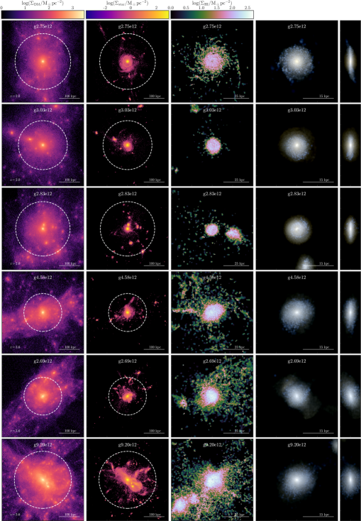
2.1 الشروط الابتدائية
اختيرت جميع الهالات من محاكاة كونية بحجم عند تحتوي على جسيم بدقة كتلية ثابتة، أُنشئت باستخدام PKDGRAV2. والدافع وراء هذه القيم المحددة هو إتاحة عدد كاف من الهالات المفيرلة ذات الكتل عند الانزياحات الحمراء الهدف، بحيث يمكن بعد ذلك «تكبيرها» وتطويرها هيدروديناميكياً. اختيرت الهالات لتكون معزولة، أي لا توجد بنى رئيسة أخرى تزيد كتلتها على 20 في المئة من كتلة الهالة المختارة ضمن . غير أن عملية الاختيار هذه لا تراعي البنية الداخلية للهالة نفسها ولا تستبعد أحداث الاندماج على مستوى المجرة. ولهذا السبب أضفنا معيار الاختيار الإضافي المذكور أعلاه على محاكاة التكبير النهائية. وتُولّد الشروط الابتدائية للتكبير باستخدام نسخة معدلة من برنامج GRAFIC2 (Bertschinger, 2001).11 1 نحيل القارئ إلى Penzo et al. (2014) للاطلاع على تفاصيل هذه التعديلات.
يُضبط مستوى التحسين بحيث يحافظ على نسبة ثابتة بين تليين قوة المادة المظلمة (DM) () و، مع حل ملف كتلة DM حتى . نعتمد هنا طول تليين DM يساوي 1/80 من المسافة بين الجسيمات في أعلى منطقة دقة، ويُحسب تليين الجاذبية للغاز وفق ، حيث . ويحفز اختيار 1/80 أنه لا يزال يحقق العتبة الدنيا التي يحددها نصف القطر الفيريالي وعدد الجسيمات داخل البالغ ، كما اقترح Power et al. (2003)، مع حل أفضل للتآثرات الديناميكية مقارنة بـ NIHAO (حيث كسر التليين هو 1/40). علاوة على ذلك، أظهر عمل حديث (Zhang et al., 2019) أن كسور التليين 1/80 و1/100 تتقارب إلى أنصاف أقطار أصغر مقارنة بطول التليين الأمثل الذي اقترحه Power et al. (2003).
2.2 تشكّل النجوم والتغذية الراجعة النجمية
يتبع تشكّل النجوم قانون Kennicutt-Schmidt (Schmidt, 1959; Kennicutt, 1998) ويُطبق كما وصفه Stinson et al. (2006, 2013). أولاً، كي تكون جسيمات الغاز مؤهلة لتشكيل نجوم، يجب أن تحقق عتبتي درجة حرارة ( K) وكثافة ( cm-3). وتبلغ الكثافة الغازية العظمى النظرية التي نستطيع حلها cm-3، وفقاً لـ:
| (2) |
حيث إن هو عدد الجسيمات المجاورة داخل نواة التنعيم، و هو الكتلة الابتدائية لجسيم الغاز. لكن عملياً، يمكن أن يبلغ الغاز كثافات أعلى بقيمة عظمى تحددها أصغر طول تنعيم، . وعلى الرغم من خفض عامل التليين إلى النصف، فإننا نُبقي عتبة كثافة NIHAO البالغة 10 cm-3، إذ تبين أن العتبات الأعلى تنتج نجوماً أقل من المتوقع مقارنة بملاءمة الوفرة عند للهالات ذات (Dutton et al., 2020).22 2 لا يستخدم Dutton et al. (2020) محاكاة تتضمن تغذية AGN راجعة، وهو ما قد يزيد المشكلة تفاقماً. وتُسمح لجسيمات الغاز التي تحقق المعايير المذكورة أعلاه بالتحول إلى نجوم وفقاً لـ:
| (3) |
حيث إن كتلة النجوم () المتشكلة بين كل خطوتين زمنيتين () هي كسر من SFR النظري المعبر عنه بكتلة الغاز المؤهل () القادرة على تشكيل نجوم خلال زمن ديناميكي واحد ().
تُنمذج التغذية الراجعة النجمية بثلاث طرائق مختلفة، تبعاً للحقبة والكتلة النجمية. أولاً، تُحرر طاقة التغذية الراجعة من النجوم الفتية اللامعة في جوارها خلال أول 4 Myr بعد ولادة جسيم نجمي، وتسمى التغذية الراجعة النجمية المبكرة (ESF). وتعتمد الطريقة نموذج Stinson et al. (2013) وتُطبق على أنها كسر من اللمعان النجمي يُقذف كطاقة حرارية متناحية الخواص في الغاز المحيط. وتمثل الطاقة التي تطلقها هذه النجوم عادة erg خلال أول 4 Myr بعد إنشاء الجسيم النجمي، ويُترك التبريد الإشعاعي للغاز فعالاً خلال هذه الحقبة.
بعد المرحلة الابتدائية، تبدأ المستعرات العظمى (SNe) للنجوم ذات الكتل الابتدائية بين 8 و40 ضمن المجتمع النجمي. ويُحسب العدد الفعلي لـ SNe من دالة الكتلة الابتدائية النجمية (IMF)، وكذلك الطاقة والكتلة والمعادن المقذوفة حول المناطق التي تشكلت فيها النجوم. وعملياً، تبلغ الطاقة المحررة erg لكل SN، وتُنمذج التغذية الراجعة من SNe وفق شكلانية موجة الانفجار الموصوفة في Stinson et al. (2006). وتُعطّل عمليات التبريد الإشعاعي في جسيمات الغاز المتأثرة. وأخيراً، فإن النجوم المتشكلة بكتل أقل من 8 تقذف باستمرار كتلة ومعادن على هيئة رياح نجمية.
2.3 الكيمياء
لا تحل الجسيمات النجمية في المحاكاة الكونية النجوم الفردية، بل هي جسيمات تتبع تمثل مجتمعاً من النجوم يُشار إليه بمجتمع نجمي بسيط (SSP)، ويُوصف بعمر واحد ()، ومعدنية ()، وIMF تحدد عدد النجوم في خانة كتلية معينة. وفي محاكاتنا اخترنا IMF لـ Chabrier (2003). ولا نعتمد نموذج تطور نجمي محدداً، بل نستخدم شيفرة التطور الكيميائي Chempy (Rybizki et al., 2017) من أجل توليف نموذج التطور النجمي النهائي وجداول المردود المناظرة لاستخدامها في كل تشغيل. ومن ثم يحسب Chempy التطور الزمني للمردود الكيميائي لـ SSP. وتشمل مردودات التخليق النووي النجمي كسور عودة الكتلة النسبية من ثلاث قنوات: مستعر أعظم من النوع Ia (SN Ia)، ومستعر أعظم لانهيار النواة (SN II)، ونجوم الفرع العملاق المقارب (AGB).
تُطبق التغذية الراجعة العنصرية من هذه القنوات الثلاث كما وصف Buck et al. (2021). ونجدول إطلاق العناصر المعتمد على الزمن والكتلة لمجتمع نجمي واحد بوصفه دالة للمعدنية الابتدائية في شبكة من 50 خانات معدنية، متباعدة لوغاريتمياً بين –0.05 في المعدنية. وتُحل كل خانة معدنية بواسطة 100 خانة زمنية، متباعدة لوغاريتمياً في الزمن وتمتد من 0 إلى 13.8 Gyr (عمر الكون في معاملاتنا الكوسموغرافية المعتمدة). تستخدم تركيبتنا المرجعية من جداول المردود مردودات SN Ia من Seitenzahl et al. (2013)، ومردودات SN II من Chieffi and Limongi (2004)، ومردودات نجوم AGB من Karakas and Lugaro (2016). تتبع جميع محاكاتنا افتراضياً تطور العناصر 10 الأكثر وفرة (H وHe وO وC وNe وFe وN وSi وMg وS)، في حين يمكن كذلك تتبع أي عنصر آخر موجود في جداول المردود. وبالنسبة إلى مجرات HELLO، نتتبع أيضاً العناصر الستة الآتية: Na وAl وCa وTi وSc وV.
2.4 التغذية الراجعة المحلية بالتأين الضوئي
تُعد فوتونات التأين عالية الطاقة من مصادر خارج المجرة جزءاً مهماً من نماذج تشكّل المجرات، ويمكن أن توفر تغذية راجعة سالبة تؤثر في تدفق الغاز وتبريده (Haardt and Madau, 1996). وفي حين يمكن تقريب إشعاع الخلفية فوق البنفسجية الخارجية (UVB) على أنه متناحي الخواص على المقاييس الكونية الكبيرة، فإن مصادر الفوتونات المحلية عالية الطاقة (النجوم أو الغاز الحار أو BHs) داخل المجرة موزعة توزيعاً شديد اللاتماثل. يُطبق التأين الضوئي والتسخين الضوئي من ثلاثة أنواع من مصادر الإشعاع المحلية فوق UVB لـ Faucher-Giguère et al. (2009) في تقريب رقيق بصرياً، كما وصفه Obreja et al. (2019). أنواع المصادر الثلاثة هي: النجوم الفتية ( Myr)، ونجوم ما بعد AGB ( Myr)، والإشعاع الكابح من الغاز الحار في ثلاث خانات حرارية: و و.
ونستخدم مباشرة نماذج التأين الضوئي Cloudy (Ferland et al., 1998) مع تراكيب المصادر التي حسبها Kannan et al. (2016). ولأن النجوم الفتية قد تبقى محاطة جزئياً بسحبها الجزيئية الأم، يُفترض أن 5 في المئة فقط من الفوتونات المنبعثة يهرب من البيئة المحلية (Kannan et al., 2014). أما الأنواع الأخرى من المصادر فيُفترض أن لها كسر هروب . ويُنمذج حجب الغاز الكثيف عن مجال الإشعاع المحلي بعلاقة بسيطة تعتمد على الكثافة، بحيث تتلقى جميع جسيمات الغاز ذات الكثافات cm-3 مجال إشعاع محلياً موهناً أسيّاً. ونفضل المجال الموهّن على قطع فجائي من أجل محاكاة انتقال أكثر سلاسة بين المناطق المحجوبة والمناطق المحجوبة جزئياً.
2.5 نمو الثقوب السوداء والتغذية الراجعة
في HELLO، يُطبق نمو BH وتغذية AGN الراجعة وفقاً لـ Blank et al. (2019). كلما تجاوزت كتلة هالة العتبة ، يُحوّل جسيم الغاز ذو أخفض كمون جاذبي إلى بذرة BH ذات كتلة ابتدائية . ثم يُسمح لجسيم BH بالتراكم وإطلاق طاقة تغذية راجعة وفقاً لـ Springel et al. (2005). ويحكم تراكم الكتلة تراكم Bondi (Bondi, 1952)، مضروباً بمعامل تعزيز :
| (4) |
مع كتلة BH ، ومع و و وهي كثافة الغاز المحيط وسرعة الصوت والسرعة، على التوالي. ويأخذ المعامل في الحسبان الدقة المحدودة في المحاكاة، وقيمته هي القيمة المثلى التي وجدها Blank et al. (2019).
معدل تراكم Eddington (Eddington, 1921):
| (5) |
يعرّف حداً أعلى للتراكم، لأنه المعدل الذي يتوازن عنده السقوط الجاذبي للغاز مع الضغط الإشعاعي. في المعادلة 5، ضُبط مقياس Salpeter الزمني (, Salpeter, 1964) والكفاءة الإشعاعية () عند 450 Myr و0.1، على التوالي.
خلال كل خطوة زمنية ()، تُراكم الكتلة () من جسيم الغاز الأكثر ارتباطاً جاذبياً، مع . وإذا كانت كتلة جسيم الغاز أقل من 20 في المئة من كتلته الابتدائية، يُزال الجسيم من المحاكاة وتُوزع كتلته وزخمه موزونين على الجيران داخل نواة التنعيم. ويصاحب ازدياد في كتلة BH ازدياد في طول تليينه لتجنب خطوات صغيرة جداً بسبب التسارعات الكبيرة. وأخيراً، يمكن التعبير عن تغذية الطاقة الحرارية الراجعة الناتجة من التراكم ككسر من لمعان BH :
| (6) |
تُوزع الطاقة الحرارية على أقرب 50 جسيمات غاز حول BH، موزونة بدالة النواة.
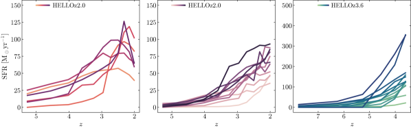
3 معدل تشكّل النجوم وتاريخه
تؤكد محاكاتنا قيم SFR الأعلى المرصودة في الكون المبكر. عند ، تمتد SFRs داخل مجرات HELLO من 35 yr-1 إلى 102 yr-1، بمتوسط 67 yr-1. وفي وقت أسبق عند ، تُظهر المجرات في عينتنا نشاطاً أكبر في تشكّل النجوم، وهو ما يترجم إلى متوسط SFR أعلى قدره 152 yr-1، وكذلك إلى تباينات أوسع، إذ تمتد المعدلات من 21 yr-1 إلى 355 yr-1. وتُحسب هذه القيم بجمع كتل تشكّل جميع النجوم الواقعة داخل خلال آخر 100 Myr ثم أخذ المتوسط على المقياس الزمني نفسه. وهدفنا هو ضمان أقرب مقارنة ممكنة مع الرصدات، لأن الرصدات تستنتج عادة SFRs من مزيج من اللمعانات تحت الحمراء وفوق البنفسجية، التي يُعتقد أنها تتتبع SFR المجرات خلال آخر 100 Myr (انظر مثلاً Speagle et al., 2014; Madau and Dickinson, 2014; Förster Schreiber and Wuyts, 2020). وفوق SFR المرجعي لدينا، نحسب أيضاً SFR أكثر آنية بمتوسط على 10 Myr؛ ولا نستخدمه في هذه الورقة، لكننا ندرجه في الجدول 3 من باب الاستكمال.
في الشكل 3، نرسم تاريخ تشكّل النجوم (SFH) لكل مجرة في عينتينا. وتُرتب تدرجات اللون من الفاتح إلى الداكن بحسب ازدياد الكتلة النجمية عند الانزياح الأحمر النهائي. وبينما تُظهر جميع مجرات HELLOz3.6 SFRs صاعدة حتى انزياحها الأحمر النهائي (اللوحة اليمنى)، فإن تنوع أشكال SFH أغنى في عينة HELLOz2.0. وبالفعل، تعرض بعض المجرات SFR صاعداً باستمرار عموماً (اللوحة الوسطى)، بينما يبدو أن بعضها الآخر بلغ ذروة SFR وبدأ بالانخفاض (اللوحة اليمنى). ونعد SFR مجرة ما متراجعاً إذا كان SFR عند أخفض مما كان عليه في اللقطتين السابقتين. وفضلاً عن ذلك، سنفترض في بقية هذه الورقة أن المجرات ذات SFRs المتراجعة قد بدأت رحلتها نحو الخمول، ونسميها «بعد الذروة»، في مقابل تلك التي لم تبلغ ذروة SFR بعد، ونسميها «قبل الذروة».
نجمع جميع SFHs في رسم واحد في الشكل 4 بإظهار وسيط كل عينة كمنحنيات سميكة (HELLOz2.0 قبل الذروة وبعدها: برتقالي وأرجواني؛ HELLOz3.6: فيروزي)، والمنطقة التي تضم المئينين 16 و84 كمساحة مظللة. يعطي الشكل 4 صورة واضحة للأنظمة المختلفة التي توجد فيها محاكاتنا. فمجرات HELLOz3.6 أكثر كفاءة بكثير في تشكيل النجوم من نظيراتها HELLOz2.0، وهذا ليس مفاجئاً لأنها تصل إلى كتل نهائية مماثلة في نحو نصف الزمن. ومن ناحية أخرى، تتميز محاكاة ما قبل الذروة وما بعدها بتطور أبطأ إلى أن تصل العينتان إلى وسيط SFR قدره . غير أن مجرات ما بعد الذروة تملك باستمرار وسيط SFR أعلى، يبلغ ذروته عند حول . والأهم أن الكتل النجمية النهائية في عينة ما قبل الذروة تمتد من إلى ، وهي أدنى بعض الشيء من عينة ما بعد الذروة التي تمتد من إلى . أي إن مجرات ما بعد الذروة أكثر كتلة قليلاً، ومن ثم قد تكون «أبعد» في تطورها.
ومن الشكلين 3 و4، يتضح أن أياً من مجراتنا ليس خاملاً، ولا سيما عند . وجد Muzzin et al. (2013)، باستخدام فهرس UltraVISTA (McCracken et al., 2012)، كسراً قدره من المجرات الخاملة عند ، وهو ما ينبغي أن ينتج، بالنسبة إلى 15 مجرة، 2–6 مجرات مخمدة. وقد يشير ذلك إلى حدّ ما في نموذج تغذية AGN الراجعة لدينا، وهو ما نتناوله بإيجاز في نهاية §5.2. وبالإضافة إلى ذلك، وباستخدام محاكاة تكبير كونية من مجموعة MassiveFIRE (Feldmann et al., 2016)، وجد Feldmann et al. (2017) أن نحو 30 في المئة من مجراتهم المركزية خاملة عند . ومع أنهم لا يدرجون تغذية AGN الراجعة، فإن سبعاً من تسع مجرات مركزية صُنفت خاملة في شكلهم 2 لها كتلة هالة أكبر من أكبر هالة لدينا . ولو أننا اخترنا مجالاً أكبر من كتل الهالات عند يمتد إلى ، لكان من المرجح أن تحتوي عينتنا على بعض المجرات المخمدة.
ومن الجدير بالملاحظة أن تقييم كسر المجرات الخاملة ضمن مجتمع مختار ليس أمراً بسيطاً. فقد أبرزت دراسات حديثة، باستخدام المحاكاة (Donnari et al., 2019) والرصدات (Leja et al., 2022; Neufeld et al., 2024)، التباين والتعقيد في تحديد المجرات الخاملة وتوصيفها. وبيّن Donnari et al. (2019) أن طريقة الاختيار، سواء عبر اللون في الإطار الساكن أو الازدواجية في مستوى SFR–، تؤثر بقوة في كسر المجرات الخاملة (فروق قدرها 10–20 في المئة) عند الكتل العالية. وبالمثل، وجد Leja et al. (2022) تبايناً قدره 20 في المئة في الكسر الخامل المستمد من أربع طرائق مختلفة باستخدام مجموعة البيانات نفسها. وأخيراً، حدد Neufeld et al. (2024)، باستخدام بيانات JWST، مصادر تُظهر انبعاث Paschen- كبيراً وممتداً غالباً، على الرغم من تصنيفها خاملة في مخطط UVJ نمطي.
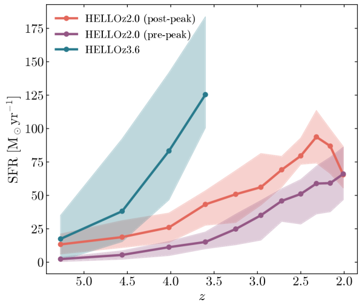
4 علاقات القياس
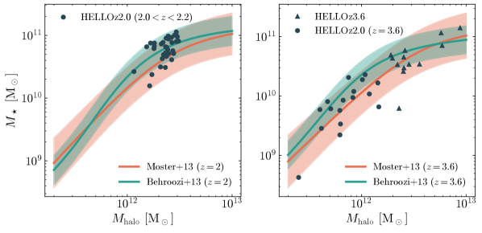
4.1 علاقة الكتلة النجمية إلى كتلة الهالة
نرسم SHMR لمجرات HELLO في الشكل 5 ونقارنها بتوقعات ملاءمة الوفرة (Moster et al., 2013; Behroozi et al., 2013) عند (اللوحة اليسرى) و (اللوحة اليمنى). وتعرض المناطق المظللة تشتت حول العلاقات المعنية. وتمثل النقاط السوداء مجرات HELLOz2.0 بين الانزياحات الحمراء (يساراً) وعند (يميناً). أما المثلثات في اللوحة اليمنى فهي اللقطات النهائية لعينة HELLOz3.6، بينما تمثل الدوائر أسلاف HELLOz2.0 عند .
تتفق محاكاتنا جيداً مع كلتا العلاقتين، كما هو متوقع، إذ سبق أن أُظهر أن مجرات NIHAO تطابق علاقة – جيداً حتى (Wang et al., 2015; Buck et al., 2017; Blank et al., 2019). جرّبنا قيمة أعلى لـ cm-3، لكن المجرات الناتجة أنتجت نجوماً أقل من اللازم عند ، وهي مسألة تناولناها بالفعل في §2.2. واستخدام مثل هذه القيمة يتطلب إعادة معايرة طويلة لكفاءات التغذية الراجعة، ونترك ذلك للدراسات المستقبلية. وفي هذا العمل، على الرغم من أننا لم نجد فروقاً ذات دلالة بين المجرات المرجعية المشغلة بـ cm-3 و cm-3 عند انزياح أحمر عالٍ، فقد اشترطنا أن تكون SHMR متفقة عند .
4.2 التسلسل الرئيسي لتشكّل النجوم
نبدأ برسم علاقة SFR– لمجراتنا في الشكل 6. ويتضمن الشكل جميع اللقطات لجميع المجرات من عينتي HELLOz2.0 (دوائر) وHELLOz3.6 (مثلثات)، مرمّزة لونياً في خانات انزياح أحمر من نزولاً إلى . تمثل كل نقطة SFR للنجوم التي تشكلت خلال آخر 100 Myr من كل لقطة، مرسوماً مقابل الكتلة النجمية المناظرة لكل مجرة. ونجد أن مجرات HELLO مترابطة بإحكام نسبي عبر العينة بأكملها.
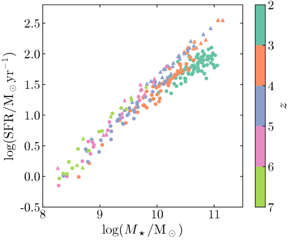
الإجماع العام بين الرصدات هو أن التشتت حول التسلسل الرئيسي ثابت تقريباً عند 0.2–0.3 dex عبر مجال الكتلة كله، وكذلك عبر الانزياحات الحمراء المفحوصة (Speagle et al., 2014)، وتتفق المحاكاة إجمالاً مع هذه الصورة (مثلاً Kannan et al., 2014; Torrey et al., 2014; Sparre et al., 2015). ونوعياً، يُظهر الشكل 6 أيضاً تشتتاً منخفضاً عند جميع الكتل وفي كل خانة انزياح أحمر. وكما ذُكر سابقاً، لم يتحقق بعد إجماع بشأن وجود كتلة انعطاف وتسطيح في التسلسل الرئيسي للمجرات المشكّلة للنجوم (SFMS). لكن عندما يظهر ذلك، فإنه يُصادف عند انزياحات حمراء أخفض ويميل إلى الاختفاء فوق .
تُظهر مجرات HELLO سلوكاً مماثلاً، حيث لا تبدي العلاقة بين –5 (النقاط البرتقالية والزرقاء) أي علامة على ميل أضحل. ولا ينطبق الأمر نفسه على النقاط الفيروزية في خانة الانزياح الأحمر 2–3، التي يبدو أنها تتسطح فوق . وأخيراً، لكل خانة انزياح أحمر تحتوي أسلاف المجرات في الخانة التالية (من الأخضر إلى الفيروزي)، يبين رسمنا أن محاكاة HELLO تتطور بسلاسة على طول SFMS عبر الأزمنة الكونية. ومن اللافت أن هذا التطور المشترك بين HELLOz3.6 وHELLOz2.0 يبدو أنه ينكسر حول ، وفوقها تُظهر مجرات HELLOz2.0 دلائل على ضعف نمو تشكّل النجوم.
نقارن علاقة SFR– لمجراتنا مع رصدات متعددة في الشكل 7. وعلى خلاف الشكل السابق، لا تظهر إلا اللقطات النهائية الثلاث (الاثنتان) من HELLOz2.0 (HELLOz3.6) في اللوحتين العلوية والسفلية، على التوالي. ومجالات الانزياح الأحمر المعنية هي و، كما يرد في وسائل الإيضاح. وبالإضافة إلى ذلك، أُضيفت لقطات HELLOz2.0 عند إلى اللوحة السفلى. ويتبع شكل النقاط الاصطلاح نفسه كما من قبل، أي إن المجرات من HELLOz2.0 تمثل بدوائر، وتلك من HELLOz3.6 بمثلثات، بينما يشير الحجم إلى ما إذا كانت العلامة المناظرة تمثل المجرة (كبيرة) عند الانزياح الأحمر النهائي أم سلفاً (صغيرة) في أزمنة أسبق.
في اللوحة العلوية، تُقارن محاكاتنا بعلاقات SFR– التجريبية التي حددها Schreiber et al. (2015) (أحمر)، وTomczak et al. (2016) (أخضر؛ خط متصل لـ SFGs ومنقط لجميع المجرات)، وBarro et al. (2017) (أرجواني)، وPearson et al. (2018) (أصفر)، وLeja et al. (2022) (أحمر داكن؛ خط متصل لـ SFGs ومنقط لجميع المجرات). وتغطي هذه العلاقات مجتمعة انزياحات حمراء تمتد من إلى . ونعرض أيضاً حد الخمول من Barro وآخرين، المعرّف بأنه 0.7 dex دون SFMS لديهم، ومبيّن هنا بخط رمادي متقطع. وفي اللوحة السفلية، تتبع الألوان الاصطلاح نفسه، مع إضافة خانة انزياح أحمر ثانية من Pearson وآخرين (أرجواني داكن). وتغطي هذه العلاقات المرصودة معاً انزياحات حمراء تمتد من إلى .
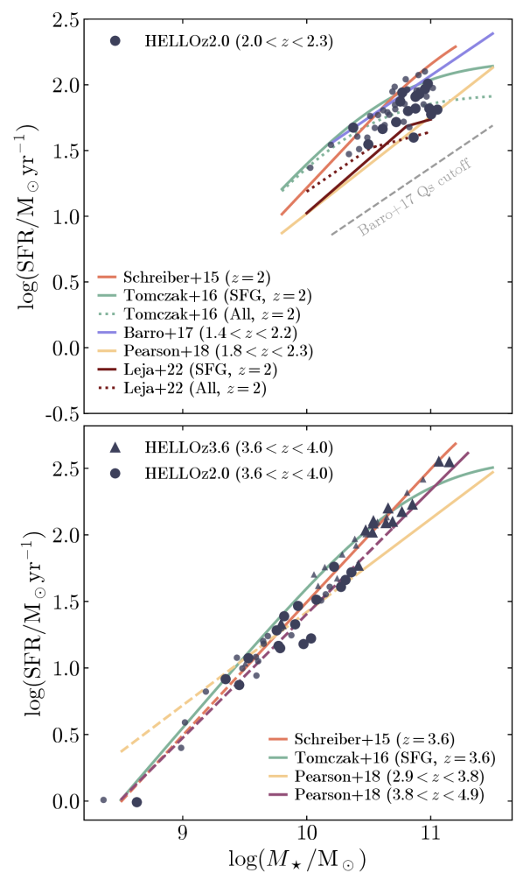
تُظهر اللوحة العلوية من الشكل 7 اتفاقاً جيداً مع الرصدات. وتحديداً، تحتضن محاكاتنا منحنى Tomczak et al. (2016) (جميع المجرات) بصورة حسنة، وتبدو متسقة مع انعطاف وتسطيح، وهو ما نحاول تكميمه في نهاية هذا القسم. وتقع HELLOz2.0 أدنى قليلاً من Schreiber et al. (2015) وBarro et al. (2017)، وكذلك أدنى من العينة المقصورة على المجرات المشكّلة للنجوم (SFGs) عند Tomczak et al. (2016). وتميل معظم SFMS المستمدة من النظرية إلى أن تقع منهجياً دون التسلسلات الرئيسية المرصودة حول 1–2 (Dutton et al., 2010; Sparre et al., 2015; Furlong et al., 2015; Somerville et al., 2015; Davé et al., 2019; Donnari et al., 2019). غير أن Wang et al. (2015) بيّن في الورقة التمهيدية لـ NIHAO أن مجراتهم لا تعاني من هذا التباين. وبما أن HELLO يشترك في الشيفرة نفسها، فمن المرجح أننا نرصد مجراتنا عند ركبة SFMS، مما يشير إلى أن بعضها ربما بدأ مرحلة الإخماد وشرع في الابتعاد عنها، كما سنبين في نهاية هذا القسم. ومع ذلك، تقع جميع مجراتنا فوق حد الخمول من Barro et al. (2017) بوضوح، ولذلك تُعد جميعها لا تزال مشكّلة للنجوم، إذ إن SFRs لديها من رتبة .
وأخيراً، تبدو مجراتنا متسقة عموماً مع علاقات Pearson et al. (2018) وLeja et al. (2022)، وإن كانت تبالغ في التطبيع. ويجادل الأولون بأن نتائجهم تقع دون SFMS أخرى بسبب الطريقة المستخدمة لتحديد SFRs. فهي تُستمد من ملاءمة SED كاملة، التي تنسب جزءاً من لمعان IR إلى المجتمع النجمي الأقدم، فتخفض بذلك الكسر المنسوب إلى النجوم الفتية. ويقدم Leja et al. (2022) حججاً مشابهة بخصوص SFMS لديهم، ويستنتجون أن التباين بين الرصدات والنظرية ينشأ من المبالغة في تقدير SFRs بطرائق IR وUV+IR. ونحيل القارئ المهتم إلى Popesso et al. (2023)، الذين جمعوا أكثر من مئة SFMS من الأدبيات، من أجل مراجعة موسعة ومزيد من النقاش.
بالانتقال إلى اللوحة السفلية من الشكل 7، تعيد مجرات HELLO في مجال الانزياح الأحمر إنتاج SFMS المرصود بدقة كبيرة عبر رتبتي مقدار من الكتل المفحوصة. والاستثناء الوحيد هو Pearson et al. (2018) للانزياحات الحمراء ، إذ إن ميلهم أضحل من التنبؤين الآخرين، وكذلك من عينة خانة الانزياح الأحمر الأعلى لديهم. وفي هذه الأزمنة الكونية المبكرة، يُتوقع أن يكون الانعطاف شبه معدوم، على الرغم من أن Tomczak et al. (2016)33 3 هنا لا نعرض إلا علاقة Tomczak وآخرين لـ SFGs، لأن الفرق مع عينة ‘الكل’ صغير نسبياً وسيزحم الشكل دون داع. وجدوا تسطيحاً ذا دلالة ما يزال يحدث عند نحو (انظر أيضاً Popesso et al., 2023). ومع أننا نفتقر إلى عدد كبير من المجرات ذات الكتل النجمية ، فإن مجراتنا لا تبدو بصرياً وكأنها تُظهر أي تسطيح.
لاحظ أن غياب أي مجرة مخمدة في عينتنا يحصر نتائجنا في المجرات المشكّلة للنجوم. ومع ذلك فإن هذا لا يبطل هذه النتائج، لأن جميع SFMSs المرصودة المعروضة في الشكل 7 تستبعد المجرات الخاملة من عيناتها، ما لم يُذكر خلاف ذلك.
4.2.1 تكميم تغير الميل والاتساق مع SFMS المرصود
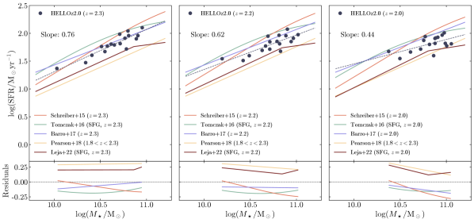
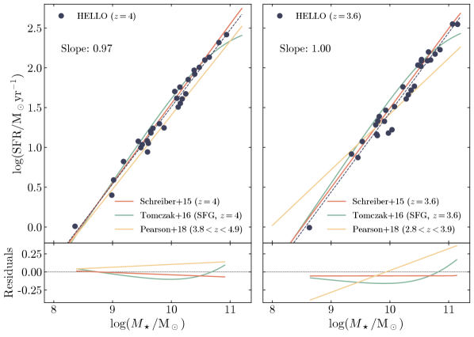
على الرغم من محدودية عدد المجرات وضيق مجال الكتل المغطى، نحاول تكميم: i) ما إذا كانت بياناتنا متسقة مع تسطيح التسلسل الرئيسي باتجاه عالية، وii) كيف تقارن ملاءمتنا بالعلاقات المرصودة في المجال (المحدود) الذي تغطيه محاكاتنا.
ولتحقيق ذلك، نستخدم طريقة المربعات الصغرى العادية لملاءمة قانون قوة بسيط ، حيث يمثل ميل الملاءمة، ونحسب البواقي بين SFMS لدينا والعلاقات المرصودة. وتُحسب البواقي على مجال الكتلة الذي تغطيه مجراتنا ونستقرئ العلاقات المرصودة عند الحاجة. نجري هذا الاختبار لخمس لقطات مختلفة بالمجموع. وبالنسبة إلى HELLOz2.0، نلائم SFMS عند و و، باستخدام اللقطات المناظرة لكل مجرة. وبالنسبة إلى HELLOz3.6، نلائم SFMS عند و بإضافة أسلاف HELLOz2.0 عند هذه الانزياحات الحمراء.
تظهر النتائج في الشكلين 8 و9. وتشبه الأشكال الشكل 7، لكنها الآن لا تتضمن في كل لوحة إلا المجرات عند انزياح أحمر ثابت. وتمثل كل نقطة مجرة واحدة، ولا نميز بصرياً بين HELLOz2.0 وHELLOz3.6 كما في الشكل 7. ويمثل الخط المتقطع الملاءمة المنجزة على تلك النقاط، وتُعرض البواقي بالنسبة إلى العلاقات المرصودة في اللوحات السفلى.
حول ، تُظهر مجراتنا SFMS ذا انخفاض منتظم نسبياً في ميله بمقدار 20–30 في المئة على فواصل Myr، وهو ما يمثل انخفاضاً كلياً بنحو 40 في المئة بين و، أو مدة زمنية قدرها Myr. وتشير هذه النتائج إلى أنه حول يبدأ SFR لمجرات HELLO بالتسطح، مؤدياً إلى انعطاف في ميل التسلسل الرئيسي. ويظهر هذا الاتجاه أيضاً في البواقي بين ملاءمتنا والعلاقات المختلفة من الأدبيات. وتحديداً، تُظهر البواقي ميلاً يطابق ميل Leja et al. (2022) قبل الانعطاف عند ويتكيف باتجاه الميل عالي الكتلة عند . وعند المقارنة الآن مع Tomczak et al. (2016)، الذين يدرجون التسطيح في منحنى أملس (بدلاً من قانون قوة مكسور)، تعرض الانزياحات الحمراء الثلاثة المفحوصة بواقي ذات شكل ثابت نسبياً، مما يشير إلى أن SFMS لدينا يتطور على نحو مشابه، وإن كان يقع أدنى بمقدار dex. وبجمع جميع الرصدات، تبقى ملاءمتنا ضمن dex من العلاقات المرصودة.
أما من إلى ، فيحتفظ موضع SFMS لدينا بميل متسق مع 1، على مدى Myr التي تفصل بين الانزياحين الأحمرين. كما تُظهر البواقي اتفاقاً ممتازاً مع Schreiber et al. (2015) وTomczak et al. (2016) وPearson et al. (2018) عند . وعند الانتقال إلى ، يبقى اتفاق ملاءمتنا متسقاً على نحو لافت مع Schreiber et al. (2015) وTomczak et al. (2016)، لكنه يُظهر تبايناً مع Pearson et al. (2018) عند الانزياح الأحمر النهائي، كما نوقش سابقاً.
إلا أننا نشدد على أن الانعطاف عند يظهر في التطور الزمني لـ SFMS الناتج من المجرات نفسها عند ثلاثة انزياحات حمراء مختلفة. وهو ليس المكافئ الدقيق للتسطيح المرصود، مثلاً، عند Tomczak et al. (2016) أو Leja et al. (2022)، لأن تلك العلاقات مستمدة من عينة واحدة من مجرات مستقلة على مدى مجال معين من الكتلة والانزياح الأحمر. غير أن نتائجنا تشير إلى أنه، بينما تُظهر محاكاتنا عند انخفاضاً ذا دلالة في ميل SFMS، فإن هذا الاتجاه غير موجود عند ويبقى الميل ثابتاً حول الواحد. ولا تزال بياناتنا متسقة مع Tomczak et al. (2016)، لكن غياب المجرات ذات يمنعنا من تقديم ادعاءات أقوى.
4.3 علاقة الحجم بالكتلة
يعرض الشكل 10 علاقة الحجم–الكتلة لمجرات HELLOz2.0 () مرسومة مقابل العلاقة المرصودة عند التي استنتجها van der Wel et al. (2014)، وكذلك علاقة Ormerod et al. (2024) (دوائر خضراء مع أشرطة خطأ) عند في اللوحة اليسرى. ونقسم مجراتنا المحاكاة إلى عينتي ما قبل الذروة (نقاط سوداء) وما بعدها (نجوم سوداء). وتعرض اللوحة اليمنى مجرات HELLOz3.6 (مثلثات) وHELLOz2.0 (دوائر) بين و، مقارنة بـ Ormerod et al. (2024) عند و. وتدل العلامات الكبيرة على المجرات عند و، بينما تقابل العلامات الأصغر الأسلاف عند انزياح أحمر أعلى. ولحساب ، نستخدم الطريقة pynbody.analysis.luminosity.half_light_r() من PYNBODY (Pontzen et al., 2013)، مطبقة على جميع الجسيمات النجمية داخل 20 في المئة من نصف القطر الفيريالي. وتحسب هذه الطريقة نصف القطر الذي تُبلغ عنده نصف اللمعان الكلي في الحزمة المعطاة (هنا ).
بدءاً باللوحة اليسرى، تقدم العلاقتان المرصودتان اللتان أدرجناهما مقارنة مثيرة للاهتمام مع محاكاتنا لأنهما مستمدتان من HST وJWST، على التوالي. فقد درس van der Wel et al. (2014) تطور توزيع الحجم–الكتلة عبر مجال الانزياح الأحمر ، باستخدام بيانات من مسوحي 3D-HST (Brammer et al., 2012) وCANDELS (Grogin et al., 2011). ومن جهة أخرى، استخدم Ormerod et al. (2024) أحدث بيانات مسح CEERS (Finkelstein et al., 2017, 2023; Bagley et al., 2023)، مع تصوير NIRCam بواسطة JWST (Rieke et al., 2023).
ومع الاتفاق الإجمالي مع علاقة SFG من van der Wel et al. (2014)، فإن مجرات HELLOz2.0 قبل الذروة تميل إلى تقليل تقدير العلاقة، ويزداد هذا الاتجاه وضوحاً مع ازدياد الكتلة النجمية. وفوق ذلك، تقع مجرات ما بعد الذروة منهجياً خارج منطقة ، وبين علاقة المجرات المشكّلة للنجوم والخاملة. ومن المثير للاهتمام أن بياناتنا تبدو أكثر اتساقاً مع الأحجام المستنتجة من JWST، ولا سيما عند الطرف عالي الكتلة. وحول ، في اللوحة اليمنى، تُظهر محاكاة HELLO أحجاماً متسقة مع Ormerod et al. (2024)، مع أنه باتجاه الكتل النجمية الأخفض () تُظهر بياناتنا بعض التوتر مع رصدات JWST. ويحصر المؤلفون عينتهم في مجرات ذات ، وهو ما يجعل، مع عدد محاكاتنا المحدود، إطلاق ادعاءات إضافية أمراً صعباً. ونلاحظ كذلك أن عينتهم تفتقر إلى أي SFG فوق عند ، ولهذا السبب أدرجنا خانات الكتلة العالية () من علاقتهم عند ، مع التنبيه إلى أن عدد المجرات هناك محدود للغاية ومن رتبة الواحد.
وعلى الرغم من القيود المذكورة أعلاه، تقدم هذه النتائج رؤى مثيرة للاهتمام، ونقترح عدة تفسيرات لما يُرى في الشكل 10.
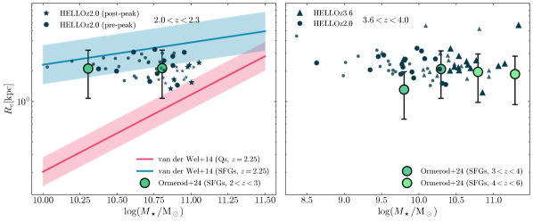
أولاً، قارن Arora et al. (2023) عدداً كبيراً من علاقات القياس بين محاكاة NIHAO والمجرات المحلية من مسح MaNGA (Bundy et al., 2015; Wake et al., 2017)، ووجدوا أن المحاكاة عالية الكتلة فوق تميل إلى الوقوع دون موضع علاقة الحجم–الكتلة المرصودة. وقد يكون السبب المحتمل ضعفاً نسبياً في التغذية الراجعة النجمية بالنسبة إلى كتلة المجرة. وهذا الضعف بدوره يمنع فرط التبريد ومن ثم التراكم الباريوني الفعال نحو مركز المجرة (انظر مثلاً McCarthy et al., 2012). ويمكن موازنة هذا الأثر بتسلم تغذية AGN الراجعة الدور، لكن الأخيرة قد لا تكون قوية بما يكفي بعد (انظر §5). وبما أن NIHAO وHELLO يشتركان في الشيفرة الهيدروديناميكية نفسها، فإننا نجادل بأن آثاراً مشابهة قد تكون فاعلة في حالتنا.
ثانياً، لا نطبق أي حد في المقدار عند حساب نصف القطر الفعال. وقد أظهر Ma et al. (2018) أن الحجم المرصود لمجرة ما يمكن أن يعتمد بقوة على حد السطوع السطحي لحملة رصد معينة. غير أن هذا العامل المحدد يميل، عند أخذه كما هو، إلى تقليل تقدير لا إلى العكس.44 4 ولا نطبق أيضاً تحويلاً لـ المحسوب لدينا إلى مكافئه عند طول موجة في الإطار الساكن قدره 5000 Å.
ثالثاً، إن حسابنا لـ هو ‘خالٍ من الغبار’. وتُظهر أعمال حديثة توظف محاكاة لمجرات في حقبة إعادة التأين (Marshall et al., 2022; Roper et al., 2022) أن توهين الغبار يمكن أن يؤدي إلى قيم مرصودة أكبر بكثير لـ . وفضلاً عن ذلك، وكما أشار Ormerod et al. (2024)، فإن JWST فعال جداً في قياس المجرات في المجال البصري في الإطار الساكن، حيث تُقلل آثار الغبار. وقد يفسر ذلك لماذا تبدو محاكاتنا، الخالية من آثار الغبار، أصغر من رصدات HST وأكثر توافقاً مع رصدات JWST.
4.4 علاقات قياس الكثافة السطحية
نحوّل انتباهنا الآن إلى علاقات قياس الكثافة السطحية، أي الارتباطات بين كثافة الكتلة السطحية والكتلة النجمية لنصف قطر معين . وفيما يلي، نحسب و، اللتين تمثلان الكثافات المحصورة داخل نصفي قطر 1 kpc ونصف القطر الفعال ، على التوالي. في الشكل 11، نبحث كيف تقارن عينتنا مع Barro et al. (2017) في علاقة الكثافة السطحية بالكتلة النجمية. وتعرض اللوحتان العلوية والسفلية و مقابل ، على التوالي. نستخدم لقطات تغطي مجال ونعلّم المجرات المنتمية إلى العينة الفرعية بعد الذروة كنجوم. وتمثل الخطوط الحمراء والزرقاء ملاءمة قانون قوة لاختيار من المجرات الضخمة من فهرس CANDELS GOODS-S (Guo et al., 2013) للمجرات الخاملة (أحمر) والمشكّلة للنجوم (أزرق)، وتمثل المناطق المظللة تشتت حول العلاقات. وفي ورقتهم، وجد Barro وآخرون أن كلتا العلاقتين كانتا قائمتين منذ من دون أي تغير عملي في الميل أو التشتت منذ ذلك الحين.
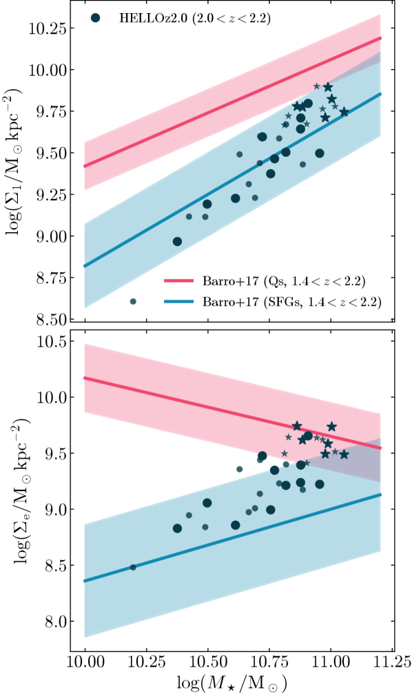
تتفق مجرات HELLO مع علاقة الكثافة المركزية لـ SFGs داخل 1 kpc اتفاقاً لافتاً، سواء في الميل أو التشتت. ومع ذلك فإنها تبالغ في تقدير ، وهي سمة تزداد وضوحاً عند الكتل الأعلى ولا سيما في مجرات ما بعد الذروة، التي تقع جيداً ضمن علاقة Barro وآخرين للمجرات الخاملة. وهذا ليس مفاجئاً عند المقارنة بالشكل 10. فكلتا العينتين المرصودتين تأتيان من المسح والأدوات نفسها، وبما أن تعتمد مباشرة على ، فإن المجرات الأصغر تُظهر بطبيعة الحال، في المتوسط، كثافات سطحية فعالة أعلى. وقد ناقشنا بالفعل في §4.3 بعض التفسيرات المرجحة للفروق المرصودة بين الرصدات والمحاكاة، ومن ثم نستنتج أن المبررات نفسها تنطبق هنا.
5 توفر الغاز وتغذية AGN الراجعة
نريد في هذا القسم التوسع في الملاحظتين الرئيسيتين بشأن SFR اللتين يمكن استخلاصهما من محاكاة HELLO، وهما: i) أن المجرات ذات الكتلة المماثلة عند انزياح أحمر أعلى تُظهر SFR أعلى، وii) أن بعض المجرات عند تبدو أنها بدأت انتقالها نحو الخمول، بينما لا تزال الأخرى تُظهر SFHs صاعدة. وتحديداً، نبحث المصادر والآليات الممكنة التي تقود إلى هذه الفروق، مع التركيز على توفر الغاز البارد وتغذية AGN الراجعة.
5.1 درجة حرارة الغاز وكثافته
نبدأ برسم التطور الزمني لوسيط كتلة الغاز البارد ( K) في مجراتنا في الشكل 12. وتعرض الخطوط المتصلة كتلة الغاز البارد داخل لمجرات HELLOz2.0 بعد الذروة (برتقالي)، وHELLOz2.0 قبل الذروة (أرجواني)، وHELLOz3.6 (فيروزي). وتمثل الخطوط المتقطعة كتلة الغاز البارد داخل 1 kpc، ويدل الخط الرمادي الرأسي المتقطع على الموضع الذي تبلغ فيه عينة ما بعد الذروة وسيط SFR الأقصى عند . تمر جميع العينات بتطور سلس مماثل عموماً، إذ تزداد كمية كتلة الغاز البارد (المركزي) بثبات مع الزمن وتبدأ بالتشبع دون في HELLOz2.0.
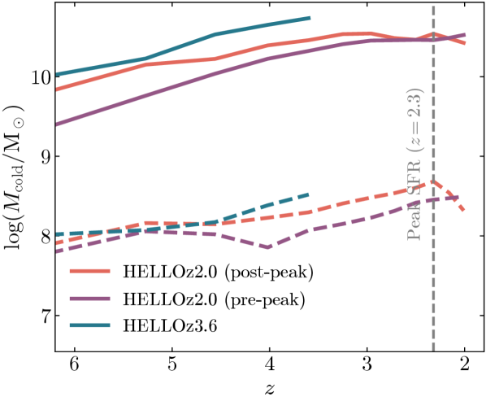
عند ، تملك مجرات ما قبل الذروة وما بعدها كمية متقاربة من الغاز البارد المتاح، لكن باتجاهين متعاكسين. فبينما لا تزال كتلة الغاز البارد (المركزي) تزداد في عينة ما قبل الذروة، فإنها تتناقص في عينة ما بعد الذروة بعد ، وهو ما يوافق زمن بلوغ مجرات ما بعد الذروة وسيط SFR الأقصى. وعند انزياحها الأحمر النهائي، تمتلك مجرات HELLOz3.6 نحو ضعفي وسيط الغاز البارد داخل 20 في المئة من ، لكنها تملك كمية مركزية مشابهة مقارنة بـ HELLOz2.0. ويمكن العثور على قائمة بالقيم الدقيقة لكل مجرة عند الانزياح الأحمر النهائي في الملحق A.
درجة حرارة الغاز ليست إلا نصف القصة في قدرة المجرة على تشكيل النجوم؛ إذ يحتاج الغاز أيضاً إلى بلوغ كثافة cm-3 في حالتنا. يعرض الشكل 13 توزيع كتلة الغاز ضمن خانات الكثافة (اللوحات اليسرى) ودرجة الحرارة (اللوحات اليمنى)، محسوبة داخل . ويقارن الصف العلوي بين HELLOz2.0 قبل وبعد الذروة، بينما يقارن الصف السفلي بين عينتي HELLOz2.0 وHELLOz3.0 كاملتين. وفي كل لوحة، تحدد الخطوط السميكة وسيط الخطوط الفاتحة نصف الشفافة التي تمثل مجرات فردية، ويدل الخط الأسود الرأسي على موضع العتبة في و لتشكّل النجوم، وتشير النجمة الصفراء إلى المنطقة (فوق العتبة المعنية أو دونها) التي يُسمح فيها بتشكل النجوم. ويُحسب كل منحنى من لقطاته النهائية المعنية.
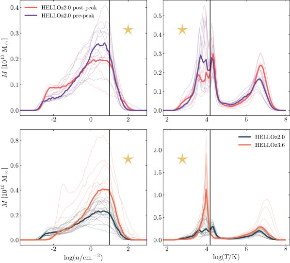
بدءاً بدرجة الحرارة في اليمين، تؤكد اللوحتان ما لاحظناه في الشكل 12، أي إن مجرات ما بعد الذروة تُظهر كمية أقل قليلاً، لكنها مشابهة، من الغاز البارد المتاح لتشكيل النجوم عند الانزياح الأحمر النهائي. ومن ناحية أخرى، تملك المحاكاة عند بوضوح كمية أكبر من الغاز البارد تحت تصرفها. وعلى مستوى المجرات الفردية، يوجد تمييز ظاهر بين HELLOz2.0 وHELLOz3.6، ما يعني أن القيم الوسيطة ليست مختلفة فحسب، بل إن المجرات الفردية عند تملك منهجياً غازاً بارداً أكثر من نظيراتها عند . وهذا بخلاف عينتي ما قبل الذروة وما بعدها، اللتين تعرضان منحنيات أكثر تداخلاً.
وبالانتقال إلى التوزيع في الكثافة (اللوحات اليسرى)، تكون النتائج متناظرة بين الانزياحين الأحمرين. تكشف HELLOz3.6 عن كمية أعلى من الغاز الكثيف، على مستوى المجرات الفردية وفي الوسيط معاً. أما عند ، فتُظهر مجرات ما قبل الذروة وما بعدها توزيعاً وسيطاً متداخلاً للغاز الكثيف. ومع ذلك، وبالنسبة إلى الكثافات cm-3، تُظهر التوزيعات الوسيطة أكبر الفوارق، مما يشير إلى أن مجرات ما قبل الذروة تحتوي على خزانات أكبر من الغاز القريب من عتبة كثافة تشكّل النجوم، وهو ما قد يسمح لها بالحفاظ على نمو إضافي في SFR نسبة إلى مجرات ما بعد الذروة.
نكمم ذلك بحساب كتلة الغاز التي تحقق معاً cm-3 و K، وكذلك الكسر المناظر بالنسبة إلى كتلة الغاز الكلية داخل مجرة. ونجد لمجرات ما بعد الذروة وما قبلها و، بما يقابل و، على التوالي. ومن ثم، في المتوسط، تملك مجرات ما قبل الذروة غازاً بارداً وكثيفاً أكثر بنسبة في المئة داخل ، ويمثل ذلك أيضاً كسراً أكبر من الغاز الكلي. وعند مقارنة عينة HELLOz2.0 الكاملة مع HELLOz3.6، نحصل على و، بما يترجم إلى كسرين قدرهما و، على التوالي. وبذلك تحتوي مجرات HELLOz3.6 على غاز بارد وكثيف أكثر بنسبة في المئة، ويمثل أيضاً كسراً أكبر من الغاز الكلي.
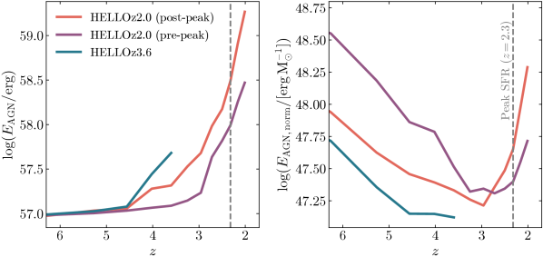
5.2 تغذية AGN الراجعة
نحوّل انتباهنا الآن إلى الطاقة55 5 وفقاً للمعادلة 6، تُعد طاقة التغذية الراجعة وكيلاً مباشراً لكتلة BH، ومن ثم للتراكم. التي يطلقها AGN مركزي، ونبحث ما إذا كان بوسعنا رصد دلائل على دوره المحتمل في تنظيم SFR لمجرته المضيفة. يحتوي الشكل 14 على التطور الزمني لوسيط طاقة تغذية AGN الراجعة التراكمية المنطلقة (يساراً) والكمية نفسها مطبعة بالكتلة النجمية عند كل انزياح أحمر (يميناً)، أي . ويتبع ترميز الألوان في كلتا اللوحتين الاصطلاح نفسه كما في الشكل 12. وتُظهر المنحنيات الثلاثة في اللوحة اليسرى تطوراً مشابهاً، مع نمو أسي مفاجئ يبدأ بين و. وعند انزياحاتها الحمراء النهائية، أطلقت مجرات HELLOz3.6 مجموعاً قدره من طاقة تغذية AGN الراجعة، وهو أقل من نظيراتها عند z=2.0، التي تبلغ و لعينتي ما قبل الذروة وما بعدها، على التوالي.
وعند التطبيع بالكتلة النجمية (اللوحة اليمنى)، تظهر الصورة الآتية. خلال المرحلة الابتدائية من تطورها، يهيمن نمو الكتلة النجمية للمجرات على نمو BH إلى أن ينعكس الاتجاه عند انزياح أحمر انعطافي قدره لـ HELLOz3.6 و لمجرات HELLOz2.0. وفي المرحلة الثانية، يهيمن نمو BH نسبة إلى الكتلة النجمية. وبخلاف العينات عند على نحو ملحوظ، فإن HELLOz3.6 لا تُظهر بعد نمواً مهيمناً لـ BH في منحناها الوسيط. ومع ذلك، فحصنا أكثر المحاكاة كتلة على نحو فردي، وقد انعكس منحناها بالفعل. لذلك نحن واثقون من تنبؤنا بأن مجرات HELLOz3.6 عموماً ستُظهر منحنى مشابهاً على شكل U إذا سُمح لها بالتطور أكثر.
تقترح اللوحة اليمنى من الشكل 14 نتيجتين رئيسيتين. أولاً، إذا افترضنا أن تغذية AGN الراجعة مسؤولة (ولو جزئياً) عن إخماد المجرات، فإن قيمة وحدها لا تكفي للتنبؤ بما إذا كان SFR مجرة ما على وشك الضعف. ففي الواقع، تشبه القيمة الوسيطة لـ في HELLOz2.0 عند القيمة عند ، التي توافق ذروة SFR، ومن ثم فقد ازدادت خلال هذه الفترة الزمنية. ثانياً، بما أن منحنيي مجرات ما قبل الذروة وما بعدها انعكسا بالفعل، على الرغم من أن عينة ما بعد الذروة وحدها تُظهر SFR متناقصاً في آخر بضع مئات Myr، نعتقد أن الانعطاف في تطور يعمل كمقدمة لتباطؤ SFR ثم الإخماد في النهاية. وبعبارة أخرى، نتنبأ بأن عينة ما قبل الذروة، في المتوسط، على وشك أن تلقى مصيراً مشابهاً لعينة ما بعد الذروة.
يعرض الشكل 15 الكمية النسبية من طاقة التغذية الراجعة التي يطلقها AGN بالنسبة إلى التغذية الراجعة الكلية (AGN زائد النجوم66 6 انظر الملحق C لتفاصيل طريقة حساب التغذية الراجعة النجمية.) بين كل لقطة وأخرى، أي في خطوات زمنية مقدارها 200 Myr. وتمثل مجرات HELLOz2.0 بعد الذروة بدوائر برتقالية، وHELLOz2.0 قبل الذروة بمربعات أرجوانية، وHELLOz3.6 بمثلثات فيروزية، على التوالي. ونتجنب عمداً استخدام منحنى متصل كما سبق، للتأكيد على أن الشكل 15 لا يعرض الطاقة النسبية التراكمية، بل الطاقة المنبعثة خلال كل لقطة.
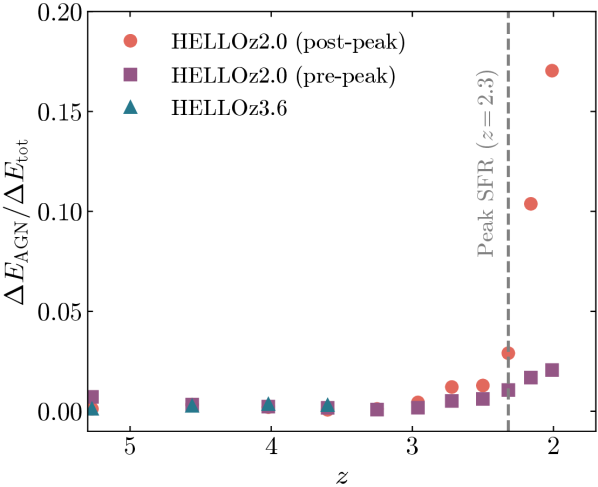
في تحليلنا، يبرز التفاعل بين التغذية الراجعة النجمية وتغذية AGN الراجعة عاملاً محورياً في الديناميات الطاقية لتطور المجرات. حتى ، تكون التغذية الراجعة النجمية هي المساهم الغالب في خرج الطاقة، مطغية تماماً على تغذية AGN الراجعة. لكن تحولاً ملحوظاً يحدث بعد ، إذ تبدأ تغذية AGN الراجعة بأداء دور أكثر أهمية. ويكون هذا الاتجاه بارزاً خصوصاً في مجرات HELLOz2.0 بعد الذروة، حيث ترتفع تغذية AGN الراجعة من 3 في المئة إلى 17 في المئة بحلول . ويرتبط هذا الارتفاع في نشاط AGN بالانخفاض المتزامن في SFR، وهو اقتران يبرز الترابطات المعقدة داخل الأنظمة المجرية.
وعلى الرغم من أن ازدياد تغذية AGN الراجعة أقل بروزاً في مجرات ما قبل الذروة، فمن الجدير بالملاحظة أن مساهمتها تنمو بثبات، بل تتجاوز SFR المتزايد. وتتسق هذه الملاحظة مع الاتجاهات المشار إليها في اللوحة اليمنى من الشكل 14. وفي الوقت نفسه، تكون مجرات HELLOz3.6 شديدة الكفاءة في تشكيل النجوم إلى درجة أن الكسر نسبة إلى الخرج الكلي يبقى مهملاً حتى الانزياح الأحمر النهائي. غير أن التسطح المرصود في اللوحة اليمنى من الشكل 14 يشير إلى تحول وشيك في هذا الاتجاه، قد يجعل هذه المجرات مصطفة مع المسار التطوري لمجرات HELLOz2.0. ومن المهم التأكيد على أنه، رغم أن تغذية AGN الراجعة قد تكون أقل كمياً في مساهمتها الطاقية الإجمالية مقارنة بالتغذية الراجعة النجمية، فإن طبيعتها الموضعية، المركزة في مركز المجرة، تنطوي على أثر غير متناسب في الجوار المباشر.
يكمن حد محتمل لدراستنا في اعتماد نتائجنا على نموذج Bondi لتراكم BH، حيث (انظر المعادلة 4). وكما أوضح Blank et al. (2019)، فإن اندماجات BH هي المحفزات الرئيسة للزيادات الكبيرة في كتلة BH في الأزمنة المبكرة، مما يسمح بتراكم كبير وبداية نمو هارب. وقد يكون هذا سبب البداية المتأخرة نسبياً لنمو BH في مجرات HELLOz3.6، التي تفتقر نتيجة لذلك إلى الوقت اللازم للتراكم (ومن ثم للإصدار) بقدر BHs في HELLOz2.0. وفضلاً عن ذلك، بيّن Soliman et al. (2023) باستخدام محاكاة NIHAO أن اختيار نموذج التراكم يمكن أن يؤثر بقوة في تطور المجرة. وفي المستقبل، نعمل على اختبار تطبيقات مختلفة لتراكم AGN وتغذيته الراجعة (C. Cho وآخرون، قيد الإعداد).
كما ذُكر سابقاً في هذا العمل، تفتقر عيناتنا إلى أي مجرة مخمدة. ومع أننا نتعامل مع إحصاءات قليلة العدد، فقد يشير ذلك مع ذلك إلى نقاط ضعف في نمذجة تغذية AGN الراجعة لدينا. نحيل القارئ إلى Blank et al. (2022) لمناقشة معمقة لحدود نموذجنا. وقد وجد المؤلفون أن مجرات NIHAO تميل إلى عبور الوادي الأخضر على مقاييس زمنية أقصر من المرصود. وقد يسمح ذلك لمجراتنا بأن تُخمد لاحقاً ولكن أسرع، وقد يكون سبباً لافتقار عيناتنا إلى مجرات مخمدة.
6 الملخص والاستنتاج
قدمنا في هذه الورقة HELLO، وهي مجموعة جديدة من محاكاة التكبير الكونية عالية الدقة لمجرات ضخمة من نمط MW عند انزياحين أحمرين نهائيين و، على التوالي. والهيدروديناميك والفيزياء دون الشبكية التي تحكم تطور هذه المجرات مماثلان لـ NIHAO (Wang et al., 2015; Blank et al., 2019) مع إضافة LPF من Obreja et al. (2019) وتغذية راجعة عنصرية منقحة كما قدمها Buck et al. (2021). وتتكون عينة HELLO المستخدمة هنا من مجموع 32 محاكاة مع و داخل أنصاف أقطارها الفيريالية. ونلخص نتائجنا كما يأتي:
-
1.
تعيد محاكاتنا إنتاج قيم SFR العالية المقاسة في SFGs عند 2–3 Gyr بعد الانفجار العظيم. علاوة على ذلك، يُظهر التطور الزمني لميل SFMS في HELLOz2.0 تسطيحاً بين و وحول ، من 0.76 إلى 0.44. ويبدو هذا التسطيح متسقاً مع Tomczak et al. (2016) وLeja et al. (2022)، كما يوضحه تطور البواقي بين ملاءمتنا والرصدات. أما من إلى ، فيبقى الميل متسقاً مع الواحد (الشكلان 8 و9).
-
2.
تتفق مجرات HELLO جيداً مع علاقة SFR– التي وجدها مؤلفون مختلفون في الأدبيات (Schreiber et al., 2015; Tomczak et al., 2016; Barro et al., 2017; Leja et al., 2022)، ولا سيما عند حيث تُظهر محاكاتنا توزيعاً محكماً على نحو لافت حول SFMS (الشكل 7). ونستعيد ميلي Pearson et al. (2018) وLeja et al. (2022) عند ، وميل Barro et al. (2017) عند (الشكل 8).
-
3.
تجد دراستنا أن مجرات HELLOz2.0 تقلل عموماً من تقدير علاقة الحجم–الكتلة المرصودة لـ SFGs من بيانات HST (van der Wel et al., 2014)، ولا سيما عند الكتل النجمية الأعلى حيث تنحرف مجرات ما بعد الذروة بقوة عن العلاقة (الشكل 10، يساراً). وتشمل الأسباب المحتملة تغذية راجعة نجمية أضعف نسبياً بالنسبة إلى (McCarthy et al., 2012; Arora et al., 2023) وبداية مرحلة الإخماد في مجرات ما بعد الذروة. غير أن محاكاتنا، عند مقارنتها بـ JWST، تتفق اتفاقاً ممتازاً مع الرصدات (Ormerod et al., 2024)، سواء حول أو . إلا أن بياناتنا، في الحالة الأخيرة وتحت ، تُظهر بعض التوتر مع Ormerod et al. (2024)، لكن محدودية عدد المجرات في جانبنا وحد الكتلة الأدنى في جانبهم يجعلان أي استنتاج أقوى أمراً صعباً (الشكل 10، اللوحة اليمنى).
-
4.
تطابق مجرات HELLO عن كثب علاقة الكثافة المركزية لـ SFGs داخل 1 kpc (Barro et al., 2017)، من حيث الميل والتشتت معاً (الشكل 11). ومع ذلك تميل المحاكاة إلى المبالغة في تقدير الكثافة السطحية الفعالة، ولا سيما في مجرات ما بعد الذروة، مقتربة أكثر من علاقة المجرات الخاملة. وتنتج هذه المبالغة في التقدير طبيعياً من أحجامنا الأصغر، كما لُخّص في (iii).
-
5.
تُظهر جميع العينات زيادة مطردة في كتلة الغاز البارد إجمالاً، مع بدء HELLOz2.0 بالتشبع دون (الشكل 12). وعند ، تملك مجرات ما قبل الذروة وما بعدها كميات متشابهة من الغاز البارد، لكن باتجاهين متباينين: ازدياد في ما قبل الذروة وانخفاض في ما بعد الذروة بعد ، وهو ما يتزامن مع وسيط SFR الأقصى لمحاكاة ما بعد الذروة. وتملك مجرات HELLOz3.6 نحو ضعفي وسيط كتلة الغاز البارد إجمالاً مقارنة بمجرات HELLOz2.0 عند انزياحها الأحمر النهائي.
-
6.
تُظهر تحليلات كثافة الغاز أن مجرات ما قبل الذروة تملك في المتوسط غازاً بارداً وكثيفاً أكثر بنسبة 25 في المئة من مجرات ما بعد الذروة داخل . وتزداد هذه القيمة إلى أكثر من 50 في المئة عند مقارنة HELLOz3.6 وHELLOz2.0 ككل.
- 7.
تتبلور من نتائجنا صورة عامة نصفها كما يأتي. بدءاً بالمجرات عند ، فإنها تمر بتقدم سلس نسبياً على طول SFMS، مميز بنمو مستدام في SFR وتراكم للغاز البارد. وتُظهر مجرات ما بعد الذروة، وهي عموماً الأكثر كتلة، SFRs أعلى باستمرار إلى أن تبلغ ذروة SFR حول ، متزامنة مع نمو كبير في BH. ونتيجة لذلك تشهد هذه الفترة استنزاف الغاز المركزي، على الأرجح بسبب استهلاك BH المركزي والنجوم للغاز، وإصدارها بدورها كمية كبيرة من الطاقة، مما يؤدي إلى حلقة تغذية راجعة سالبة وإلى SFR متراجع.
وعلى العكس من ذلك، لم تبلغ مجرات ما قبل الذروة ذروة SFRs بعد. فهي لا تُظهر نقصاً في مخازن الغاز البارد المركزية، ونشاط AGN فيها أقل شدة بكثير، كما يدل عليه انخفاض انبعاث التغذية الراجعة. ومع ذلك، نفترض أن هذه المجرات لا تعدو أن تكون متأخرة عن نظيراتها بعد الذروة، وستحاكيها في نهاية المطاف خلال بضع مئات Myr77 7 يُظهر تحليل اللقطات اللاحقة أن SFRs لمعظم هذه المجرات تبدأ بالانخفاض بعد . لكن بعد الانزياح الأحمر الهدف، فإن ازدياد مخاطر التلوث بجسيمات DM منخفضة الدقة في المناطق عالية الدقة يحفز اختيارنا عدم اعتبار هذه النتائج بحرفيتها في هذا العمل. ، كما تشير كتلها النجمية وقيم SFR العالية لديها (انظر مثلاً Peng et al., 2010).
عند ، تملك المجرات مخزونات أكبر من الغاز البارد وعالي الكثافة، وهو ما يفسر SFRs الأعلى لديها. كما تستضيف BHs أقل كتلة، تكون تغذيتها الراجعة أضعف بكثير من المجرات عند . ويمكن عزو هذه الفروق إلى أزمنة التبريد الأقصر السائدة عند الانزياح الأحمر العالي، مما يسمح للغاز بأن يبرد ويبلغ عتبة الكثافة بسرعة أكبر. ومن ثم يشكل الغاز النجوم بنشاط بدلاً من تغذية AGN المركزي. وننبه القارئ إلى أننا قد نكون أيضاً بصدد مشاهدة بعض حدود نمذجتنا لتراكم AGN وتغذيته الراجعة. وسوف تُبحث هذه المسائل بمزيد من التفصيل في أعمال مستقبلية.
تدعم نتائجنا فكرة أن زيادة تغذية AGN الراجعة مرتبطة بتراجع SFRs، لكن لا يمكننا الادعاء بأن هذا الارتباط علاقة سببية مباشرة. ولا يستبعد ذلك الحدوث المتزامن لنشاط AGN شديد وSFRs عالية في SFGs (Hopkins et al., 2006)، إذ تُظهر مجرات ما بعد الذروة وما قبلها وسطاء SFR متقاربة عند انزياحاتها الحمراء النهائية، لكنها تتبع مسارات معاكسة. ويشير الأخير إلى أن النمو الأسي للثقوب السوداء المركزية والتغذية الراجعة اللاحقة يسبقان معاً عملية الإخماد (Di Matteo et al., 2005; Springel et al., 2005).
ومن الجدير بالذكر أن وفرة من الأعمال النظرية بحثت التوافر الكبير للغاز البارد وذروة تشكّل النجوم عند الظهيرة الكونية، ونسبتها إلى انتشار تيارات باردة من الغاز قادرة على إيصال كمية ثابتة وكبيرة من الوقود الجديد مباشرة إلى المجرة المركزية (تراكم النمط البارد؛ Katz et al., 2003; Kereš et al., 2005). وتستطيع هذه التيارات الموازية أن تُبقي الغاز غير مصدوم أثناء اختراقها للهالة (Dekel and Birnboim, 2006; Dekel et al., 2009; Kereš et al., 2009; Brooks et al., 2009; van de Voort et al., 2011; Aung et al., 2024)، حتى عندما تكون الهالة فوق عتبة الكتلة اللازمة لصدمة فيريالية مستقرة (Birnboim and Dekel, 2003). وبينما تُظهر مجراتنا عند كسراً أعلى بكثير من الغاز البارد والكثيف مقارنة بـ ، فإننا نؤجل استكشاف أصله إلى ورقة مرافقة (Waterval وآخرون، قيد الإعداد).
وبوضعها الحالي، تمثل محاكاة HELLO خطوة ذات معنى نحو فهم أفضل لطبيعة المجرات عند الانزياحات الحمراء العالية، وستساعد تحسيناتها المقبلة على تعزيز قدراتها أكثر.
الشكر والتقدير
نشكر Alexander Knebe على مساعدته في المشكلات التي واجهناها مع AHF، ونشكر Carlo Cannarozzo على صياغة الاختصار HELLO. تستند هذه المادة إلى عمل مدعوم من Tamkeen في إطار منحة معهد الأبحاث بجامعة نيويورك أبوظبي CASS. وقد أصبح إسهام TB في هذا المشروع ممكناً بتمويل من Carl Zeiss Foundation. وقد مُوّل A.O. من Deutsche Forschungsgemeinschaft (DFG، German Research Foundation) – 443044596. ويُقر المؤلفون بامتنان بدعم Gauss Centre for Supercomputing e.V. (www.gauss-centre.eu) لهذا المشروع عبر توفير زمن حوسبة على الحاسوب الفائق GCS Supercomputer SuperMUC في Leibniz Supercomputing Centre (www.lrz.de) وموارد الحوسبة عالية الأداء في جامعة نيويورك أبوظبي.
توافر البيانات
ستُتاح البيانات التي يستند إليها هذا المقال بناءً على طلب معقول إلى المؤلف المراسل.
References
- MaNGA galaxy properties - II. A detailed comparison of observed and simulated spiral galaxy scaling relations. MNRAS 522 (1), pp. 1208–1227. External Links: Document, 2304.02033 Cited by: §4.3, item 3.
- Entrainment of Hot Gas into Cold Streams: The Origin of Excessive Star-formation Rates at Cosmic Noon. arXiv e-prints, pp. arXiv:2403.00912. External Links: Document, 2403.00912 Cited by: §6.
- CEERS Epoch 1 NIRCam Imaging: Reduction Methods and Simulations Enabling Early JWST Science Results. ApJ 946 (1), pp. L12. External Links: Document, 2211.02495 Cited by: §4.3.
- Structural and Star-forming Relations since z 3: Connecting Compact Star-forming and Quiescent Galaxies. ApJ 840 (1), pp. 47. External Links: Document, 1509.00469 Cited by: §1, Figure 11, §4.2, §4.2, §4.4, item 2, item 4.
- The Average Star Formation Histories of Galaxies in Dark Matter Halos from z = 0-8. ApJ 770, pp. 57. External Links: 1207.6105, Document Cited by: Figure 5, §4.1.
- Galaxy Bulges and their Black Holes: a Requirement for the Quenching of Star Formation. ApJ 682 (1), pp. 355–360. External Links: Document, 0804.4001 Cited by: §1.
- The massive end of the luminosity and stellar mass functions: dependence on the fit to the light profile. MNRAS 436 (1), pp. 697–704. External Links: Document, 1304.7778 Cited by: Appendix B.
- An enhanced fraction of starbursting galaxies among high Eddington ratio AGNs. MNRAS 460 (1), pp. 902–916. External Links: Document, 1604.06455 Cited by: §1.
- Multiscale Gaussian Random Fields and Their Application to Cosmological Simulations. ApJS 137, pp. 1–20. External Links: astro-ph/0103301, Document Cited by: §2.1.
- Virial shocks in galactic haloes?. MNRAS 345 (1), pp. 349–364. External Links: Document, astro-ph/0302161 Cited by: §1, §6.
- NIHAO - XXII. Introducing black hole formation, accretion, and feedback into the NIHAO simulation suite. MNRAS 487 (4), pp. 5476–5489. External Links: Document, 1906.06955 Cited by: §1, §2.5, §4.1, §5.2, §6.
- NIHAO - XXVII. Crossing the green valley. MNRAS 514 (4), pp. 5296–5306. External Links: Document, 2204.11579 Cited by: §5.2.
- NIHAO XXVI: nature versus nurture, the star formation main sequence, and the origin of its scatter. MNRAS 500 (1), pp. 1414–1420. External Links: Document, 2008.13379 Cited by: §1.
- On spherically symmetrical accretion. MNRAS 112, pp. 195. External Links: Document Cited by: §2.5.
- 3D-HST: A Wide-field Grism Spectroscopic Survey with the Hubble Space Telescope. ApJS 200 (2), pp. 13. External Links: Document, 1204.2829 Cited by: §4.3.
- The physical properties of star-forming galaxies in the low-redshift Universe. MNRAS 351 (4), pp. 1151–1179. External Links: Document, astro-ph/0311060 Cited by: §1.
- The Role of Cold Flows in the Assembly of Galaxy Disks. ApJ 694 (1), pp. 396–410. External Links: Document, 0812.0007 Cited by: §6.
- NIHAO XV: the environmental impact of the host galaxy on galactic satellite and field dwarf galaxies. MNRAS 483 (1), pp. 1314–1341. External Links: Document, 1804.04667 Cited by: §1.
- NIHAO XIII: Clumpy discs or clumpy light in high-redshift galaxies?. MNRAS 468 (3), pp. 3628–3649. External Links: Document, 1612.05277 Cited by: §4.1.
- The challenge of simultaneously matching the observed diversity of chemical abundance patterns in cosmological hydrodynamical simulations. MNRAS 508 (3), pp. 3365–3387. External Links: Document, 2103.03884 Cited by: §2.3, §6.
- Size Evolution of the Most Massive Galaxies at 1.7 < z < 3 from GOODS NICMOS Survey Imaging. ApJ 687 (2), pp. L61. External Links: Document, 0807.4141 Cited by: §1.
- Overview of the SDSS-IV MaNGA Survey: Mapping nearby Galaxies at Apache Point Observatory. ApJ 798 (1), pp. 7. External Links: Document, 1412.1482 Cited by: §4.3.
- Early formation of massive, compact, spheroidal galaxies with classical profiles by violent disc instability or mergers. MNRAS 447 (4), pp. 3291–3310. External Links: Document, 1409.2622 Cited by: §1.
- Radiative feedback and the low efficiency of galaxy formation in low-mass haloes at high redshift. MNRAS 442 (2), pp. 1545–1559. External Links: Document, 1307.0943 Cited by: footnote 8.
- Galactic Stellar and Substellar Initial Mass Function. PASP 115, pp. 763–795. External Links: astro-ph/0304382, Document Cited by: Appendix C, §2.3.
- The Dependence of Quenching upon the Inner Structure of Galaxies at 0.5 <= z < 0.8 in the DEEP2/AEGIS Survey. ApJ 760 (2), pp. 131. External Links: Document, 1210.4173 Cited by: §1.
- Explosive Yields of Massive Stars from Z = 0 to Z = Zsolar. ApJ 608 (1), pp. 405–410. External Links: Document, astro-ph/0402625 Cited by: §2.3.
- A Catalog of 406 AGNs in MaNGA: A Connection between Radio-mode AGNs and Star Formation Quenching. ApJ 901 (2), pp. 159. External Links: Document, 2008.11210 Cited by: §1.
- Quenching star formation with quasar outflows launched by trapped IR radiation. MNRAS 479 (2), pp. 2079–2111. External Links: Document, 1709.08638 Cited by: §1.
- The EAGLE simulations of galaxy formation: calibration of subgrid physics and model variations. MNRAS 450 (2), pp. 1937–1961. External Links: Document, 1501.01311 Cited by: §1.
- Multiwavelength Study of Massive Galaxies at z~2. I. Star Formation and Galaxy Growth. ApJ 670 (1), pp. 156–172. External Links: Document, 0705.2831 Cited by: §1.
- Stellar populations in local AGNs: evidence for enhanced star formation in the inner 100 pc. MNRAS 509 (3), pp. 4653–4668. External Links: Document, 2111.10036 Cited by: §1.
- SIMBA: Cosmological simulations with black hole growth and feedback. MNRAS 486 (2), pp. 2827–2849. External Links: Document, 1901.10203 Cited by: §4.2.
- Cold streams in early massive hot haloes as the main mode of galaxy formation. Nature 457 (7228), pp. 451–454. External Links: Document, 0808.0553 Cited by: §6.
- Wet disc contraction to galactic blue nuggets and quenching to red nuggets. MNRAS 438 (2), pp. 1870–1879. External Links: Document, 1310.1074 Cited by: §1.
- Galaxy bimodality due to cold flows and shock heating. MNRAS 368 (1), pp. 2–20. External Links: Document, astro-ph/0412300 Cited by: §1, §6.
- Energy input from quasars regulates the growth and activity of black holes and their host galaxies. Nature 433 (7026), pp. 604–607. External Links: Document, astro-ph/0502199 Cited by: §6.
- The star formation activity of IllustrisTNG galaxies: main sequence, UVJ diagram, quenched fractions, and systematics. MNRAS 485 (4), pp. 4817–4840. External Links: Document, 1812.07584 Cited by: §3, §4.2.
- NIHAO - XXV. Convergence in the cusp-core transformation of cold dark matter haloes at high star formation thresholds. MNRAS 499 (2), pp. 2648–2661. External Links: Document, 2011.11351 Cited by: §2.2, footnote 2.
- NIHAO XII: galactic uniformity in a CDM universe. MNRAS 467 (4), pp. 4937–4950. External Links: Document, 1610.06375 Cited by: §1.
- On the origin of the galaxy star-formation-rate sequence: evolution and scatter. MNRAS 405 (3), pp. 1690–1710. External Links: Document, 0912.2169 Cited by: §4.2.
- Das Strahlungsgleichgewicht der Sterne. Zeitschrift fur Physik 7 (1), pp. 351–397. External Links: Document Cited by: §2.5.
- The reversal of the star formation-density relation in the distant universe. A&A 468 (1), pp. 33–48. External Links: Document, astro-ph/0703653 Cited by: §1.
- The star formation rates of active galactic nuclei host galaxies. MNRAS 458 (1), pp. L34–L38. External Links: Document, 1601.03349 Cited by: §1.
- A Link between Star Formation Quenching and Inner Stellar Mass Density in Sloan Digital Sky Survey Central Galaxies. ApJ 776 (1), pp. 63. External Links: Document, 1308.5224 Cited by: §1.
- A New Calculation of the Ionizing Background Spectrum and the Effects of He II Reionization. ApJ 703 (2), pp. 1416–1443. External Links: Document, 0901.4554 Cited by: §2.4.
- The formation of massive, quiescent galaxies at cosmic noon. MNRAS 458 (1), pp. L14–L18. External Links: Document, 1601.04704 Cited by: §3.
- Colours, star formation rates and environments of star-forming and quiescent galaxies at the cosmic noon. MNRAS 470 (1), pp. 1050–1072. External Links: Document, 1610.02411 Cited by: §3.
- CLOUDY 90: Numerical Simulation of Plasmas and Their Spectra. PASP 110 (749), pp. 761–778. External Links: Document Cited by: §2.4.
- CEERS Key Paper. I. An Early Look into the First 500 Myr of Galaxy Formation with JWST. ApJ 946 (1), pp. L13. External Links: Document, 2211.05792 Cited by: §4.3.
- The Cosmic Evolution Early Release Science (CEERS) Survey. Note: JWST Proposal ID 1345. Cycle 0 Early Release Science Cited by: §4.3.
- Star-Forming Galaxies at Cosmic Noon. ARA&A 58, pp. 661–725. External Links: Document, 2010.10171 Cited by: §3.
- Evolution of galaxy stellar masses and star formation rates in the EAGLE simulations. MNRAS 450 (4), pp. 4486–4504. External Links: Document, 1410.3485 Cited by: §4.2.
- The James Webb Space Telescope. Space Sci. Rev. 123 (4), pp. 485–606. External Links: Document, astro-ph/0606175 Cited by: §1.
- Introducing the Illustris project: the evolution of galaxy populations across cosmic time. MNRAS 445 (1), pp. 175–200. External Links: Document, 1405.3749 Cited by: footnote 8.
- The evolution of substructure - I. A new identification method. MNRAS 351 (2), pp. 399–409. External Links: Document, astro-ph/0404258 Cited by: §2.
- CANDELS: The Cosmic Assembly Near-infrared Deep Extragalactic Legacy Survey. ApJS 197 (2), pp. 35. External Links: Document, 1105.3753 Cited by: §4.3.
- The Herschel PEP/HerMES luminosity function - I. Probing the evolution of PACS selected Galaxies to z ≃ 4. MNRAS 432 (1), pp. 23–52. External Links: Document, 1302.5209 Cited by: §1.
- CANDELS Multi-wavelength Catalogs: Source Detection and Photometry in the GOODS-South Field. ApJS 207 (2), pp. 24. External Links: Document, 1308.4405 Cited by: §4.4.
- Radiative Transfer in a Clumpy Universe. II. The Ultraviolet Extragalactic Background. ApJ 461, pp. 20. External Links: Document, astro-ph/9509093 Cited by: §2.4.
- Herschel-ATLAS/GAMA: a difference between star formation rates in strong-line and weak-line radio galaxies. MNRAS 429 (3), pp. 2407–2424. External Links: Document, 1211.6440 Cited by: §1.
- A Unified, Merger-driven Model of the Origin of Starbursts, Quasars, the Cosmic X-Ray Background, Supermassive Black Holes, and Galaxy Spheroids. ApJS 163 (1), pp. 1–49. External Links: Document, astro-ph/0506398 Cited by: §6.
- Widespread and Hidden Active Galactic Nuclei in Star-forming Galaxies at Redshift >0.3. ApJ 764 (2), pp. 176. External Links: Document, 1211.6436 Cited by: §1.
- The MaGICC volume: reproducing statistical properties of high-redshift galaxies. MNRAS 437, pp. 3529–3539. External Links: 1302.2618, Document Cited by: §2.4, §4.2.
- Galaxy formation with local photoionization feedback - II. Effect of X-ray emission from binaries and hot gas. MNRAS 458 (3), pp. 2516–2529. External Links: Document, 1505.06202 Cited by: §2.4.
- Stellar Yields from Metal-rich Asymptotic Giant Branch Models. ApJ 825 (1), pp. 26. External Links: Document, 1604.02178 Cited by: §2.3.
- How Do Galaxies Get Their Gas?. In The IGM/Galaxy Connection. The Distribution of Baryons at z=0, J. L. Rosenberg and M. E. Putman (Eds.), Astrophysics and Space Science Library, Vol. 281, pp. 185. External Links: Document, astro-ph/0209279 Cited by: §6.
- The Global Schmidt Law in Star-forming Galaxies. ApJ 498 (2), pp. 541–552. External Links: Document, astro-ph/9712213 Cited by: §2.2.
- Galaxies in a simulated CDM Universe - I. Cold mode and hot cores. MNRAS 395 (1), pp. 160–179. External Links: Document, 0809.1430 Cited by: §6.
- How do galaxies get their gas?. MNRAS 363 (1), pp. 2–28. External Links: Document, astro-ph/0407095 Cited by: §1, §6.
- AHF: Amiga’s Halo Finder. ApJS 182 (2), pp. 608–624. External Links: Document, 0904.3662 Cited by: §2.
- Bulge Growth and Quenching since z = 2.5 in CANDELS/3D-HST. ApJ 788 (1), pp. 11. External Links: Document, 1402.0866 Cited by: §1.
- Wet compaction to a blue nugget: a critical phase in galaxy evolution. MNRAS 522 (3), pp. 4515–4547. External Links: Document, 2302.12234 Cited by: §1.
- Infrared Luminosity Functions from the Chandra Deep Field-South: The Spitzer View on the History of Dusty Star Formation at 0 <~z <~1. ApJ 632 (1), pp. 169–190. External Links: Document, astro-ph/0506462 Cited by: §1.
- A Turnover in the Galaxy Main Sequence of Star Formation at M ∗ ~1010 M ⊙ for Redshifts z < 1.3. ApJ 801 (2), pp. 80. External Links: Document, 1501.01080 Cited by: §1.
- A New Census of the 0.2 < z < 3.0 Universe. II. The Star-forming Sequence. ApJ 936 (2), pp. 165. External Links: Document, 2110.04314 Cited by: §1, §3, §4.2.1, §4.2.1, §4.2, §4.2, item 1, item 2.
- Quenching star formation: insights from the local main sequence. MNRAS 455 (1), pp. L82–L86. External Links: Document, 1509.03632 Cited by: §1.
- Simulating galaxies in the reionization era with FIRE-2: morphologies and sizes. MNRAS 477 (1), pp. 219–229. External Links: Document, 1710.00008 Cited by: §4.3.
- NIHAO - XXIII. Dark matter density shaped by black hole feedback. MNRAS 495 (1), pp. L46–L50. External Links: Document, 2004.03817 Cited by: §1.
- NIHAO X: reconciling the local galaxy velocity function with cold dark matter via mock H I observations. MNRAS 463 (1), pp. L69–L73. External Links: Document Cited by: §1.
- Cosmic Star-Formation History. ARA&A 52, pp. 415–486. External Links: Document, 1403.0007 Cited by: §2, §3.
- The impact of dust on the sizes of galaxies in the Epoch of Reionization. MNRAS 511 (4), pp. 5475–5491. External Links: Document, 2110.12075 Cited by: §4.3.
- Morphological Quenching of Star Formation: Making Early-Type Galaxies Red. ApJ 707 (1), pp. 250–267. External Links: Document, 0905.4669 Cited by: §1.
- Rotation rates, sizes and star formation efficiencies of a representative population of simulated disc galaxies. MNRAS 427 (1), pp. 379–392. External Links: Document, 1204.5195 Cited by: §4.3, item 3.
- UltraVISTA: a new ultra-deep near-infrared survey in COSMOS. A&A 544, pp. A156. External Links: Document, 1204.6586 Cited by: §3.
- Heating Hot Atmospheres with Active Galactic Nuclei. ARA&A 45 (1), pp. 117–175. External Links: Document, 0709.2152 Cited by: §1.
- Galactic star formation and accretion histories from matching galaxies to dark matter haloes. MNRAS 428, pp. 3121–3138. External Links: 1205.5807, Document Cited by: Figure 5, §4.1.
- The Evolution of the Stellar Mass Functions of Star-forming and Quiescent Galaxies to z = 4 from the COSMOS/UltraVISTA Survey. ApJ 777 (1), pp. 18. External Links: Document, 1303.4409 Cited by: §3.
- Overview of the European Extremely Large Telescope and its instrument suite. In SF2A-2018: Proceedings of the Annual meeting of the French Society of Astronomy and Astrophysics, P. Di Matteo, F. Billebaud, F. Herpin, N. Lagarde, J. -B. Marquette, A. Robin, and O. Venot (Eds.), pp. Di. External Links: Document, 1812.06639 Cited by: §1.
- FRESCO: The Paschen- Star Forming Sequence at Cosmic Noon. arXiv e-prints, pp. arXiv:2404.10816. External Links: Document, 2404.10816 Cited by: §3.
- Star Formation in AEGIS Field Galaxies since z=1.1: The Dominance of Gradually Declining Star Formation, and the Main Sequence of Star-forming Galaxies. ApJ 660 (1), pp. L43–L46. External Links: Document, astro-ph/0701924 Cited by: §1.
- Local photoionization feedback effects on galaxies. MNRAS 490 (2), pp. 1518–1538. External Links: Document, 1909.00832 Cited by: §2.4, §6.
- EPOCHS VI: the size and shape evolution of galaxies since z 8 with JWST Observations. MNRAS 527 (3), pp. 6110–6125. External Links: Document, 2309.04377 Cited by: §1, Figure 10, §4.3, §4.3, §4.3, §4.3, item 3.
- HST/WFC3 Confirmation of the Inside-out Growth of Massive Galaxies at 0 < z < 2 and Identification of Their Star-forming Progenitors at z ~3. ApJ 766 (1), pp. 15. External Links: Document, 1208.0341 Cited by: §1.
- Main sequence of star forming galaxies beyond the Herschel confusion limit. A&A 615, pp. A146. External Links: Document, 1804.03482 Cited by: §1, §4.2.1, §4.2, §4.2, §4.2, item 2.
- Mass and Environment as Drivers of Galaxy Evolution in SDSS and zCOSMOS and the Origin of the Schechter Function. ApJ 721 (1), pp. 193–221. External Links: Document, 1003.4747 Cited by: §6.
- Dark MaGICC: the effect of dark energy on disc galaxy formation. Cosmology does matter. MNRAS 442, pp. 176–186. External Links: 1401.3338, Document Cited by: footnote 1.
- Planck 2013 results. XVI. Cosmological parameters. A&A 571, pp. A16. External Links: Document, 1303.5076 Cited by: §2.
- pynbody: N-Body/SPH analysis for python Note: Astrophysics Source Code Library, record ascl:1305.002 Cited by: §4.3.
- The main sequence of star-forming galaxies across cosmic times. MNRAS 519 (1), pp. 1526–1544. External Links: Document, 2203.10487 Cited by: §4.2, §4.2.
- The inner structure of CDM haloes - I. A numerical convergence study. MNRAS 338, pp. 14–34. External Links: astro-ph/0201544, Document Cited by: §2.1.
- On the evolution of the H I column density distribution in cosmological simulations. MNRAS 430, pp. 2427–2445. External Links: 1210.7808, Document Cited by: Figure 2.
- Performance of NIRCam on JWST in Flight. PASP 135 (1044), pp. 028001. External Links: Document, 2212.12069 Cited by: §4.3.
- First Light And Reionisation Epoch Simulations (FLARES) - IV. The size evolution of galaxies at z 5. MNRAS 514 (2), pp. 1921–1939. External Links: Document, 2203.12627 Cited by: §4.3.
- Chempy: A flexible chemical evolution model for abundance fitting. Do the Sun’s abundances alone constrain chemical evolution models?. A&A 605, pp. A59. External Links: Document, 1702.08729 Cited by: §2.3.
- Accretion of Interstellar Matter by Massive Objects.. ApJ 140, pp. 796–800. External Links: Document Cited by: §2.5.
- The GALEX-VVDS Measurement of the Evolution of the Far-Ultraviolet Luminosity Density and the Cosmic Star Formation Rate. ApJ 619 (1), pp. L47–L50. External Links: Document, astro-ph/0411424 Cited by: §1.
- The UV-Optical Color Magnitude Diagram. II. Physical Properties and Morphological Evolution On and Off of a Star-forming Sequence. ApJS 173 (2), pp. 315–341. External Links: Document, 0711.4823 Cited by: §1.
- The Rate of Star Formation.. ApJ 129, pp. 243. External Links: Document Cited by: §2.2.
- The Herschel view of the dominant mode of galaxy growth from z = 4 to the present day. A&A 575, pp. A74. External Links: Document, 1409.5433 Cited by: §1, §4.2.1, §4.2, §4.2, item 2.
- Three-dimensional delayed-detonation models with nucleosynthesis for Type Ia supernovae. MNRAS 429 (2), pp. 1156–1172. External Links: Document, 1211.3015 Cited by: §2.3.
- Thirty Meter Telescope Detailed Science Case: 2015. Research in Astronomy and Astrophysics 15 (12), pp. 1945. External Links: Document, 1505.01195 Cited by: §1.
- Co-Evolution vs. Co-existence: The effect of accretion modelling on the evolution of black holes and host galaxies. MNRAS 525 (1), pp. 12–23. External Links: Document, 2307.13863 Cited by: §5.2.
- Star formation in semi-analytic galaxy formation models with multiphase gas. MNRAS 453 (4), pp. 4337–4367. External Links: Document, 1503.00755 Cited by: §4.2.
- The star formation main sequence and stellar mass assembly of galaxies in the Illustris simulation. MNRAS 447 (4), pp. 3548–3563. External Links: Document, 1409.0009 Cited by: §4.2, §4.2.
- A Highly Consistent Framework for the Evolution of the Star-Forming “Main Sequence” from z ~0-6. ApJS 214 (2), pp. 15. External Links: Document, 1405.2041 Cited by: §1, §3, §4.2.
- Modelling feedback from stars and black holes in galaxy mergers. MNRAS 361, pp. 776–794. External Links: astro-ph/0411108, Document Cited by: §2.5, §6.
- Cosmological N-body simulations and their analysis. Ph.D. Thesis, UNIVERSITY OF WASHINGTON. Cited by: §2.
- PkdGRAV2: Parallel fast-multipole cosmological code. Note: Astrophysics Source Code Library, record ascl:1305.005 External Links: 1305.005 Cited by: §2.
- Where do galaxies end? Comparing measurement techniques of hydrodynamic-simulation galaxies’ integrated properties. MNRAS 445 (1), pp. 239–255. External Links: Document, 1404.4053 Cited by: Appendix B.
- Making Galaxies In a Cosmological Context: the need for early stellar feedback. MNRAS 428, pp. 129–140. External Links: 1208.0002, Document Cited by: §2.2, §2.2.
- Star formation and feedback in smoothed particle hydrodynamic simulations - I. Isolated galaxies. MNRAS 373, pp. 1074–1090. External Links: astro-ph/0602350, Document Cited by: §2.2, §2.2.
- Evidence for mature bulges and an inside-out quenching phase 3 billion years after the Big Bang. Science 348 (6232), pp. 314–317. External Links: Document, 1504.04021 Cited by: §1.
- The confinement of star-forming galaxies into a main sequence through episodes of gas compaction, depletion and replenishment. MNRAS 457 (3), pp. 2790–2813. External Links: Document, 1509.02529 Cited by: Appendix B, §1.
- The SFR-M* Relation and Empirical Star-Formation Histories from ZFOURGE* at 0.5 < z < 4. ApJ 817 (2), pp. 118. External Links: Document, 1510.06072 Cited by: §1, §4.2.1, §4.2.1, §4.2.1, §4.2, §4.2, §4.2, item 1, item 2.
- A model for cosmological simulations of galaxy formation physics: multi-epoch validation. MNRAS 438 (3), pp. 1985–2004. External Links: Document, 1305.4931 Cited by: §4.2.
- Strong size evolution of the most massive galaxies since z 2. MNRAS 382 (1), pp. 109–120. External Links: Document, 0709.0621 Cited by: §1.
- The entropy history of the universe. A&A 350, pp. 725–742. External Links: Document, astro-ph/9907068 Cited by: §1.
- The rates and modes of gas accretion on to galaxies and their gaseous haloes. MNRAS 414 (3), pp. 2458–2478. External Links: Document, 1011.2491 Cited by: §6.
- Structural Parameters of Galaxies in CANDELS. ApJS 203 (2), pp. 24. External Links: Document, 1211.6954 Cited by: §1.
- 3D-HST+CANDELS: The Evolution of the Galaxy Size-Mass Distribution since z = 3. ApJ 788 (1), pp. 28. External Links: Document, 1404.2844 Cited by: §1, Figure 10, §4.3, §4.3, §4.3, item 3.
- The Assembly of Milky-Way-like Galaxies Since z ~2.5. ApJ 771 (2), pp. L35. External Links: Document, 1304.2391 Cited by: §1.
- Forming Compact Massive Galaxies. ApJ 813 (1), pp. 23. External Links: Document, 1506.03085 Cited by: §1.
- Introducing the Illustris Project: simulating the coevolution of dark and visible matter in the Universe. MNRAS 444, pp. 1518–1547. External Links: 1405.2921, Document Cited by: §1.
- Gasoline2: a modern smoothed particle hydrodynamics code. MNRAS 471, pp. 2357–2369. External Links: Document Cited by: §2.
- The SDSS-IV MaNGA Sample: Design, Optimization, and Usage Considerations. AJ 154 (3), pp. 86. External Links: Document, 1707.02989 Cited by: §4.3.
- NIHAO project - I. Reproducing the inefficiency of galaxy formation across cosmic time with a large sample of cosmological hydrodynamical simulations. MNRAS 454, pp. 83–94. External Links: 1503.04818, Document Cited by: Appendix B, §1, §4.1, §4.2, §6.
- NIHAO - XXVIII. Collateral effects of AGN on dark matter concentration and stellar kinematics. MNRAS 514 (4), pp. 5307–5319. External Links: Document, 2204.13373 Cited by: §1.
- Predicting Quiescence: The Dependence of Specific Star Formation Rate on Galaxy Size and Central Density at 0.5 < z < 2.5. ApJ 838 (1), pp. 19. External Links: Document, 1607.03107 Cited by: §1.
- Constraining the Low-mass Slope of the Star Formation Sequence at 0.5 < z < 2.5. ApJ 795 (2), pp. 104. External Links: Document, 1407.1843 Cited by: §1.
- The optimal gravitational softening length for cosmological N-body simulations. MNRAS 487 (1), pp. 1227–1232. External Links: Document, 1810.07055 Cited by: §2.1.
- Ejective and preventative: the IllustrisTNG black hole feedback and its effects on the thermodynamics of the gas within and around galaxies. MNRAS 499 (1), pp. 768–792. External Links: Document, 2004.06132 Cited by: §1.
- Compaction and quenching of high-z galaxies in cosmological simulations: blue and red nuggets. MNRAS 450 (3), pp. 2327–2353. External Links: Document, 1412.4783 Cited by: §1.
Appendix A كميات HELLO عند انزياحها الأحمر النهائي
| Name | |||||||||||||||||||
|---|---|---|---|---|---|---|---|---|---|---|---|---|---|---|---|---|---|---|---|
| [a] | [a] | [b] | [b] | [b] | [b] | [b] | [b] | [b] | [c] | [c] | [d] | [d] | [e] | [e] | |||||
| g3.08e12 | 1,943,368 | 732,154 | 752,300 | 458,914 | 142 | 1.5 | 2.84 | 2.48 | 10.09 | 7.31 | 2.60 | 2.07 | 34.42 | 55 | 60 | 6.64 | 5.43 | 3.73 | 2.87 |
| g3.09e12 | 2,058,093 | 758,531 | 836,846 | 462,716 | 144 | 2.4 | 2.94 | 2.57 | 11.33 | 7.26 | 2.47 | 0.00 | 74.07 | 68 | 65 | 5.56 | 3.07 | 4.07 | 3.14 |
| g3.00e12 | 1,501,948 | 626,696 | 433,000 | 442,252 | 135 | 1.9 | 2.43 | 2.12 | 5.91 | 8.33 | 3.45 | 4.11 | 0.51 | 99 | 87 | 2.91 | 2.23 | 4.13 | 3.18 |
| g3.20e12 | 1,693,806 | 694,672 | 456,825 | 542,309 | 140 | 3.3 | 2.72 | 2.35 | 5.69 | 9.27 | 4.35 | 2.61 | 3.31 | 81 | 75 | 2.37 | 0.99 | 3.92 | 3.02 |
| g2.75e12 | 1,778,286 | 624,856 | 720,877 | 432,553 | 135 | 2.3 | 2.45 | 2.12 | 9.74 | 8.77 | 4.34 | 2.08 | 24.14 | 66 | 66 | 7.82 | 3.84 | 3.96 | 3.05 |
| g3.03e12 | 1,250,411 | 426,342 | 548,685 | 275,384 | 119 | 2.3 | 1.67 | 1.44 | 7.55 | 5.69 | 2.35 | 2.78 | 5.56 | 54 | 66 | 5.12 | 2.48 | 3.85 | 2.96 |
| g3.01e12 | 1,729,071 | 683,692 | 563,963 | 481,416 | 139 | 1.7 | 2.66 | 2.32 | 7.67 | 7.41 | 2.72 | 4.36 | 3.02 | 84 | 83 | 5.94 | 4.14 | 4.80 | 3.69 |
| g2.29e12 | 1,333,337 | 460,720 | 543,304 | 329,313 | 122 | 2.8 | 1.81 | 1.56 | 7.53 | 7.71 | 3.19 | 3.79 | 4.94 | 95 | 81 | 4.39 | 1.73 | 4.30 | 3.31 |
| g3.35e12 | 964,316 | 441,712 | 175,744 | 346,860 | 120 | 2.1 | 1.72 | 1.50 | 2.37 | 6.69 | 3.25 | 2.71 | 1.05 | 53 | 47 | 0.93 | 0.67 | 2.47 | 1.90 |
| g3.31e12 | 1,449,371 | 594,285 | 408,855 | 446,231 | 133 | 1.6 | 2.32 | 2.01 | 5.27 | 8.21 | 3.79 | 5.05 | 13.40 | 79 | 52 | 3.94 | 2.99 | 3.13 | 2.41 |
| g3.25e12 | 1,643,064 | 674,577 | 412,909 | 555,578 | 139 | 3.1 | 2.65 | 2.29 | 4.09 | 8.11 | 4.55 | 2.26 | 1.19 | 58 | 46 | 1.68 | 0.72 | 2.67 | 2.06 |
| g3.38e12 | 2,014,002 | 787,483 | 639,957 | 586,562 | 146 | 1.5 | 3.08 | 2.67 | 8.09 | 9.86 | 3.68 | 9.65 | 4.70 | 106 | 85 | 6.26 | 4.51 | 5.91 | 4.55 |
| g3.36e12 | 1,209,250 | 529,555 | 251,774 | 427,921 | 128 | 2.0 | 2.08 | 1.79 | 3.14 | 4.43 | 1.95 | 2.16 | 2.22 | 31 | 35 | 1.55 | 1.14 | 1.85 | 1.42 |
| g2.83e12 | 1,551,228 | 592,464 | 523,384 | 435,380 | 133 | 2.5 | 2.32 | 2.01 | 6.57 | 5.75 | 2.24 | 3.32 | 3.44 | 86 | 63 | 3.19 | 1.63 | 3.39 | 2.61 |
| g2.63e12 | 1,682,819 | 596,827 | 661,422 | 424,570 | 133 | 3.1 | 2.35 | 2.02 | 9.01 | 7.85 | 3.34 | 3.12 | 1.36 | 93 | 93 | 3.14 | 1.67 | 5.14 | 3.96 |
| g3.04e12 | 1,997,107 | 774,655 | 710,292 | 512,160 | 145 | 2.2 | 3.01 | 2.63 | 9.50 | 8.10 | 2.82 | 2.03 | 17.25 | 103 | 102 | 5.14 | 3.11 | 6.00 | 4.62 |
| g2.91e12 | 1,445,948 | 541,666 | 542,915 | 361,367 | 129 | 1.3 | 2.11 | 1.84 | 7.29 | 4.33 | 1.36 | 4.22 | 13.63 | 40 | 40 | 6.01 | 5.51 | 2.38 | 1.83 |
| g2.47e12 | 1,259,900 | 567,753 | 247,017 | 445,130 | 87 | 2.2 | 2.21 | 1.92 | 3.39 | 8.16 | 3.94 | 2.61 | 0.44 | 121 | 104 | 1.22 | 0.92 | 5.09 | 3.91 |
| g2.40e12 | 1,231,536 | 577,171 | 123,812 | 530,553 | 88 | 2.6 | 2.29 | 1.96 | 0.62 | 5.16 | 3.43 | 1.09 | 0.16 | 27 | 21 | 0.18 | 0.12 | 1.01 | 0.77 |
| g2.69e12 | 1,493,797 | 650,082 | 332,760 | 510,955 | 91 | 2.3 | 2.54 | 2.20 | 4.53 | 10.95 | 5.47 | 4.14 | 0.28 | 178 | 158 | 1.89 | 1.17 | 7.13 | 5.49 |
| g3.76e12 | 1,998,769 | 910,838 | 298,900 | 789,031 | 102 | 2.0 | 3.58 | 3.09 | 3.45 | 12.28 | 6.08 | 3.31 | 0.54 | 146 | 127 | 1.26 | 0.89 | 6.31 | 4.85 |
| g4.58e12 | 1,616,009 | 662,886 | 417,102 | 536,021 | 92 | 2.6 | 2.60 | 2.25 | 5.86 | 11.22 | 5.44 | 4.89 | 1.12 | 165 | 149 | 3.65 | 1.60 | 7.66 | 5.89 |
| g2.71e12 | 1,216,000 | 490,095 | 304,633 | 421,272 | 84 | 2.5 | 1.98 | 1.70 | 4.35 | 9.75 | 4.76 | 3.72 | 0.64 | 159 | 123 | 1.92 | 1.07 | 6.44 | 4.95 |
| g2.49e12 | 1,427,551 | 647,600 | 227,010 | 552,941 | 91 | 2.2 | 2.55 | 2.19 | 2.99 | 9.72 | 4.83 | 2.76 | 0.14 | 113 | 108 | 1.30 | 0.87 | 5.13 | 3.95 |
| g2.51e12 | 1,529,843 | 635,272 | 338,985 | 555,586 | 91 | 2.0 | 2.52 | 2.15 | 2.61 | 6.57 | 3.89 | 2.75 | 0.39 | 62 | 59 | 1.68 | 1.02 | 3.07 | 2.36 |
| g7.37e12 | 3,526,490 | 1,465,334 | 866,819 | 1,194,337 | 120 | 2.2 | 5.76 | 4.97 | 11.64 | 20.65 | 8.87 | 11.06 | 1.42 | 407 | 355 | 6.05 | 3.14 | 16.88 | 12.99 |
| g2.32e12 | 1,218,031 | 486,245 | 340,064 | 391,722 | 83 | 2.1 | 1.91 | 1.65 | 4.93 | 8.47 | 4.19 | 4.48 | 0.81 | 124 | 125 | 2.95 | 1.69 | 6.94 | 5.34 |
| g2.96e12 | 1,605,548 | 716,314 | 258,236 | 630,998 | 95 | 2.8 | 2.84 | 2.45 | 3.43 | 12.71 | 6.63 | 2.10 | 0.26 | 159 | 122 | 0.99 | 0.62 | 5.83 | 4.48 |
| g7.97e12 | 3,546,175 | 1,487,662 | 755,426 | 1,303,087 | 121 | 1.2 | 5.89 | 5.04 | 7.12 | 13.80 | 6.76 | 10.00 | 3.04 | 183 | 169 | 7.22 | 6.02 | 9.03 | 6.95 |
| g9.20e12 | 5,318,120 | 2,230,919 | 1,317,484 | 1,769,717 | 138 | 2.4 | 8.74 | 7.56 | 14.15 | 25.68 | 10.61 | 1.21 | 66.69 | 351 | 352 | 9.39 | 4.07 | 19.82 | 15.25 |
تُحسب أعداد الجسيمات المختلفة، وكذلك و، داخل ، بينما تُحسب الكميات الباريونية داخل ، ما لم يُحدد خلاف ذلك بالمؤشرين ‘1’ أو ‘e.’
الوحدات: [a] [kpc]، [b] []، [c] []، [d] []، و[e] [erg].
Appendix B اختيار نصف القطر المجري
لحساب كميات باريونية متنوعة مثل أو أو SFR، نحتاج إلى تعريف حدود المجرة. ومن الناحية المثالية، ينبغي أن تكون القاعدة المختارة i) بسيطة ومتسقة وii) تتيح مقارنة عادلة قدر الإمكان مع الرصدات. اخترنا في هذه الورقة كرة تحتوي 20 في المئة من بوصفها نصف قطرنا المجري لحساب الخصائص الباريونية المجرية. وعلى الرغم من أن هذا الاختيار اعتباطي إلى حد ما، فإنه يوفر اتساقاً عبر جميع المجرات في عينتنا، وكذلك مع NIHAO ومحاكاة أخرى (Wang et al., 2015; Tacchella et al., 2016).88 8 يستخدم بعض المؤلفين 10 في المئة من (مثلاً Ceverino et al., 2014) أو مضاعفاً لنصف قطر نصف الكتلة (مثلاً Genel et al., 2014). اختبر Stevens et al. (2014) طرائق مختلفة لتعريف حافة المجرة في المحاكاة، ومع أنهم ينصحون بعدم استخدام كسر من نصف القطر الفيريالي، وجدوا أن التقنية المختارة لا تؤثر تأثيراً كبيراً في المقارنات مع علاقات القياس المرصودة. وينبغي أيضاً إبراز أن الرصدات لا تخلو من نقاشات مشابهة، وأن الطرائق المختلفة يمكن أن تقود إلى نتائج مختلفة كذلك (Bernardi et al., 2013).
يتضح من الشكل 2 أن المحيط المباشر لبعض المجرات فوضوي نسبياً مع وجود توابع قريبة على وشك الاندماج. لذلك نقارن القيم التي نحصل عليها لـ عند أخذ بالنسبة إلى قيمتنا المرجعية ، ونتأكد من أن لا يتغير بأكثر من 10 في المئة عند الانزياح الأحمر النهائي. ونتحقق أيضاً من أن التغير في و وSFR يبقى ضمن هذه الحدود. وتظهر النتائج في الجدول الآتي 3.
| Name | |||||
|---|---|---|---|---|---|
| g3.08e12 | 2.0 | 1.2 | 1.4 | 0.9 | 0.5 |
| g3.09e12 | 2.0 | 2.2 | 0.1 | 0.1 | 0.0 |
| g3.00e12 | 2.0 | 4.1 | 2.4 | 1.8 | 0.5 |
| g3.20e12 | 2.0 | 2.2 | 1.6 | 1.8 | 0.4 |
| g2.75e12 | 2.0 | 1.8 | 2.3 | 2.8 | 0.9 |
| g3.03e12 | 2.0 | 2.2 | 1.7 | 2.0 | 0.0 |
| g3.01e12 | 2.0 | 1.2 | 0.1 | 0.1 | 0.2 |
| g2.29e12 | 2.0 | 1.9 | 1.3 | 1.5 | 0.3 |
| g3.35e12 | 2.0 | 9.0 | 6.5 | 5.4 | 0.9 |
| g3.31e12 | 2.0 | 4.0 | 5.1 | 4.2 | 2.0 |
| g3.25e12 | 2.0 | 7.9 | 6.6 | 7.9 | 4.8 |
| g3.38e12 | 2.0 | 13.8 | 11.8 | 12.8 | 1.6 |
| g3.36e12 | 2.0 | 1.2 | 0.0 | 0.0 | 0.6 |
| g2.83e12 | 2.0 | 10.6 | 10.0 | 9.6 | 12.3 |
| g2.63e12 | 2.0 | 1.5 | 0.1 | 0.1 | 0.0 |
| g3.04e12 | 2.0 | 2.1 | 0.9 | 0.8 | 0.1 |
| g2.91e12 | 2.0 | 0.3 | 0.3 | 0.1 | 0.0 |
| g2.47e12 | 3.6 | 3.9 | 1.6 | 1.2 | 0.9 |
| g2.40e12 | 3.6 | 5.5 | 4.1 | 3.2 | 4.6 |
| g2.69e12 | 3.6 | 9.1 | 6.3 | 5.7 | 1.1 |
| g3.76e12 | 3.6 | 8.1 | 4.1 | 3.4 | 1.3 |
| g4.36e12 | 3.6 | 30.8 | 39.1 | 73.2 | 26.0 |
| g4.58e12 | 3.6 | 4.7 | 3.5 | 4.3 | 0.9 |
| g2.71e12 | 3.6 | 4.3 | 2.0 | 1.8 | 0.9 |
| g2.49e12 | 3.6 | 5.3 | 3.3 | 2.8 | 1.2 |
| g2.51e12 | 3.6 | 2.0 | 1.7 | 1.7 | 0.9 |
| g7.37e12 | 3.6 | 6.0 | 6.2 | 6.8 | 2.2 |
| g2.32e12 | 3.6 | 2.5 | 0.8 | 0.8 | 0.4 |
| g2.96e12 | 3.6 | 11.7 | 9.9 | 9.0 | 6.6 |
| g7.97e12 | 3.6 | 4.8 | 7.7 | 7.8 | 3.6 |
| g9.20e12 | 3.6 | 6.4 | 4.5 | 5.6 | 1.8 |
| g9.85e12 | 3.6 | 39.5 | 64.4 | 387.1 | 37.7 |
لقد أبرزنا المجرتين اللتين لم نستخدمهما في هذه الورقة بسبب الفرق الكبير في (وفي جميع الكميات الأخرى) عند خفض نصف القطر المجري إلى . ومن باب الاستكمال، نعرض خرائط كثافتهما السطحية النجمية في الشكل 16. وتشبه هذه الخرائط الشكل 2، حيث تمثل في هذه الحالة الدائرتان الخارجية المتقطعة والداخلية المنقطة و، على التوالي. وكما يوضح الجدول 3، أثّر حدثا الاندماج هذان بقوة في الكميات النجمية المحسوبة بالنسبة إلى الحافة المختارة لكل مجرة. ولذلك استبعدناهما من هذه الورقة.
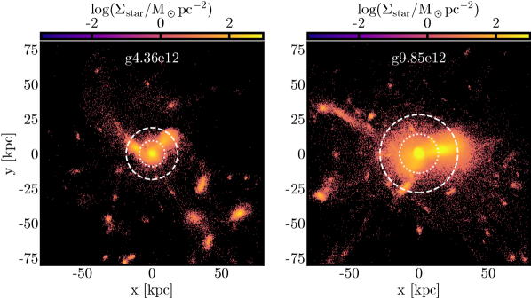
Appendix C حساب الطاقة من التغذية الراجعة النجمية
فيما يلي نفصل المنهجية المستخدمة لحساب الطاقات المرتبطة بتغذية ESF وSNe الراجعة. ونحسب الكميتين كلتيهما منفصلتين خلال كل لقطة قبل جمعهما للحصول على طاقة التغذية الراجعة النجمية الكلية.
يُحسب إطلاق الطاقة خلال كل لقطة محاكاة للنجوم التي تشكلت ضمن فواصل زمنية محددة نسبة إلى اللقطات. فبالنسبة إلى لقطة معينة s عند عمر كوني بوحدة Myr، تكون النجوم ذات الصلة هي التي تشكلت في الفاصل الزمني ، حيث هو عمر الكون عندما تشكل الجسيم النجمي، وتشير عملية الطرح بمقدار 4 إلى 4 Myr التي تطلق خلالها النجوم الفتية ESF وقبل أن تنفجر النجوم المؤهلة كـ SNe. ولأجل الحساب، نفترض أن طاقتي التغذية الراجعة تطلقان دفعة واحدة بعد 4 Myr من تشكل الجسيم النجمي. وبعبارة أخرى، إذا كانت، مثلاً، اللقطة تقابل Gyr واللقطة تقابل 1.2 Gyr، فإن الجسيمات النجمية المتشكلة في الفاصل من 0.96 Gyr إلى 1.16 Gyr ستسهم في طاقة التغذية الراجعة المحسوبة في اللقطة .
بعد اختيار النجوم ذات الصلة فقط، تُحسب كمية ESF المقذوفة خلال لقطة واحدة كما يأتي:
| (7) |
حيث إن هي كمية الطاقة بوحدة erg المنطلقة لكل كتلة شمسية متشكلة () من SNe، و هو كسر هذه الطاقة المقذوف كطاقة حرارية متناحية الخواص.
وتُحسب طاقة تغذية SN الراجعة استناداً إلى عدد النجوم ضمن مجال الكتلة 8-40 المتوقع أن تنفجر كـ SN II، والمعبر عنه بـ . ويُحدد ذلك بتكامل IMF لـ Chabrier (Chabrier, 2003) على مجال الكتلة المحدد، مقيساً وفق الكلي. وتُعطى طاقة تغذية SN الراجعة عندئذ بـ:
| (8) |